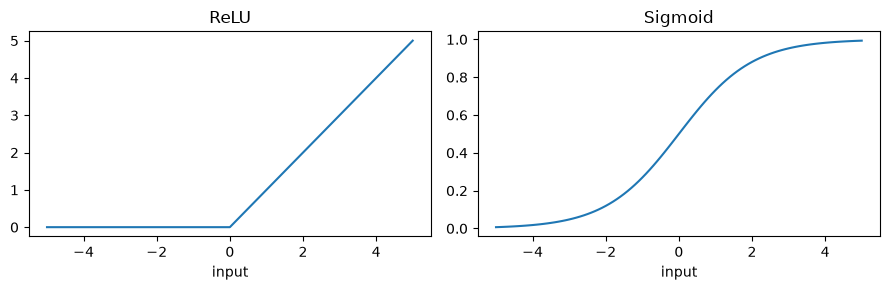

[9장] 딥러닝 (1): 신경망의 구성과 학습
비즈니스빅데이터분석
9장
딥러닝 (1): 신경망의 구성과 학습
2027학년도 「비즈니스빅데이터분석」의 준비 중인 교재입니다. 편집 상태를 검토하기 위해 미리 공개한 것으로, 수업 전에 내용과 순서가 바뀔 수 있습니다.
학사 11주차 · 교재 09 · 3부 AI 모델링 · 출제 분야: AI 모델링 > 딥러닝 모델 학습
AICE Associate의 AI 모델링 분야에는 딥러닝 모델의 학습이 포함된다. 시험지는 층의 순서와 유닛 수, 활성화 함수를 적은 층 구성 그림과 가이드를 주고, 그대로 Keras 모델을 구성하여 컴파일하고 학습시키게 한다. 가이드는 손실 함수와 최적화기, 배치 크기와 에폭을 지정하며, 분류 문제에서는 목표 열을 정수나 원핫 행렬로 바꾸게 한다. 층을 하나 빠뜨리거나 출력층을 문제의 유형과 다르게 두면 학습이 오류로 멈추거나, 멈추지 않더라도 의미 없는 값을 낸다.
본 장은 TensorFlow의 Keras로 표 데이터용 신경망을 구성하고 학습시키는 방법을 다룬다. 층과 유닛, 입력의 형태, 활성화 함수, 출력층의 세 가지 형식, 손실 함수와 최적화기와 지표, 에폭과 배치 크기, 분류 문제의 목표 열 변환을 차례로 설명한다. 자료는 5장의 회귀용 데이터와 7장의 분류용 데이터를 그대로 쓴다. 신경망의 수학(역전파의 유도 등)은 다루지 않고, 층을 구성하고 설정을 고르는 데 필요한 만큼만 설명한다. 다만 뉴런 하나의 계산, 파라미터 수, 손실 함수의 값은 작은 예로 손 계산하고 같은 계산을 코드로 실행하여 대조한다. 손으로 따라갈 수 있는 계산은 summary()와 학습 기록의 숫자를 읽는 근거가 되기 때문이다. 학습 과정을 제어하고 결과를 그래프로 확인하는 방법은 10장에서 다룬다.
학습 목표
- 층 구성도를 읽고
keras.Sequential,keras.Input,keras.layers.Dense로 신경망을 구성한다. Dense층의 파라미터 수를입력 수 × 유닛 수 + 유닛 수로 계산하고summary()의 값과 대조한다.- 은닉층과 출력층의 활성화 함수(relu, sigmoid, softmax)를 구분하여 지정한다.
- 회귀, 이진 분류, 다중 분류에 맞는 출력층과 손실 함수, 평가 지표를 골라 컴파일한다.
- 에폭, 배치 크기, 검증 데이터를 지정하여 학습시키고,
evaluate와predict로 결과를 확인한다. - 분류 문제의 목표 열을
LabelEncoder와to_categorical로 바꾸고, 손실 함수와 목표의 형식을 맞춘다. - 뉴런 하나의 계산과 손실 함수의 값을 작은 예로 손 계산하고, 학습 기록의 에폭별 값을 읽어 학습의 상태를 판단한다.
준비 사항
| 항목 | 내용 |
|---|---|
| 실습 노트북 | AICE_09장_실습_학생용.ipynb |
| 자료 | customers.csv(회귀용·분류용 훈련 데이터의 원본), laptops.csv(시간 제한 문항용) |
| 앞 장과의 연계 | 5장(회귀용 분할과 스케일링), 7장(분류용 층화 분할, 분류 지표), 4장(LabelEncoder) |
| 앞 과목과의 연계 | 「빅데이터 개론」 11장(신경망의 구조와 활성화 함수의 개념). 코드는 이 장에서 처음 다룬다 |
| 실습 환경 | TensorFlow가 설치되어 있어야 한다. 확인 방법은 부록 A를 따른다 |
노트북의 0번 셀은 3~5장의 표준 처리 과정과 7장의 분류용 분할을 수행한다. 이 장은 회귀와 분류를 함께 다루므로 변수 이름에 접두를 붙였다. 회귀용은 Xr_train_s, Xr_valid_s, yr_train, yr_valid, 분류용은 Xc_train_s, Xc_valid_s, yc_train, yc_valid이다.
0. 실습 준비
이 절에서는 노트북을 열고 자료 준비 셀과 TensorFlow 불러오기 셀을 실행하여, 이 장의 예제가 쓰는 변수와 라이브러리가 준비되었는지 확인한다. 실습 환경의 설치와 접속은 부록 A를 따르며 여기서는 다루지 않는다.
0-1. 노트북 열기
- 실습 폴더의
book/에서AICE_09장_실습_학생용.ipynb를 연다. 노트북은 자료를../kit/data/AICE_공통/에서 읽으므로 노트북 파일을 다른 폴더로 옮기지 않는다. - 화면 오른쪽 위에서 커널이 파이썬 3인지 확인한다.
- 이전에 열어 실행한 적이 있으면 커널을 다시 시작하고 출력을 모두 지운 뒤 위에서부터 실행한다. 신경망은 앞 셀에서 만든 모델을 뒤 셀이 이어서 쓰므로, 중간 셀부터 실행하면 변수가 없다는 오류가 나거나 학습이 두 번 겹쳐 값이 달라진다.
[그림 자리: 실습 노트북을 연 주피터 화면]
AICE_09장_실습_학생용.ipynb를 연 화면. 첫 셀의 제목 「[9장] 실습: 딥러닝 (1): 신경망의 구성과 학습」, 오른쪽 위의 커널 이름, 셀 왼쪽의 실행 표시([ ],[*],[1])가 보이게 찍는다. 찍을 곳: 학교 실습 환경의 JupyterLab.
- 확인 1 노트북의 첫 셀의 제목이 「[9장] 실습: 딥러닝 (1): 신경망의 구성과 학습」이고, 노트북이 세 부분(1부 따라 하기, 2부 중심 실습, 3부 시간 제한 문항)으로 나뉘어 있다.
0-2. 자료 준비 셀의 실행
1부의 「0. 자료 준비」 셀을 실행한다. 이 셀은 3~5장의 표준 처리 과정(정제, 인코딩, 회귀용 분할과 스케일링)과 7장의 분류용 층화 분할을 한 번에 수행한다.
# [예제 1]
import numpy as np
import pandas as pd
from sklearn.model_selection import train_test_split
from sklearn.preprocessing import StandardScaler
DATA = "../kit/data/AICE_공통/"
# 3장: 정제본 df_clean (2940행, 16열, 결측치 0)
df = pd.read_csv(DATA + "customers.csv") # (3030, 17)
df = df.drop_duplicates() # (3000, 17)
df = df.drop(columns=["customer_id"])
df = df.dropna(subset=["annual_spend"]) # (2988, 16)
df = df[(df["age"].between(19, 80)) | (df["age"].isna())]
df = df[df["annual_spend"] > 0] # (2973, 16)
q1 = df["avg_session_min"].quantile(0.25)
q3 = df["avg_session_min"].quantile(0.75)
iqr = q3 - q1
lower, upper = q1 - 1.5 * iqr, q3 + 1.5 * iqr # 4.15, 29.35
df = df[(df["avg_session_min"].between(lower, upper)) | (df["avg_session_min"].isna())] # (2940, 16)
df["age"] = df["age"].fillna(df["age"].median())
df["visits_per_month"] = df["visits_per_month"].fillna(df["visits_per_month"].median())
df["avg_session_min"] = df["avg_session_min"].fillna(df["avg_session_min"].median())
df["gender"] = df["gender"].fillna(df["gender"].mode()[0])
df_clean = df.reset_index(drop=True)
# 4장: 인코딩본 df_enc (2940행, 26열, 문자열 열 0)
df = df_clean.copy()
df["region"] = df["region"].str.strip().str.title()
df["region"] = df["region"].replace({"Gyeonggi-Do": "Gyeonggi"})
counts = df["region"].value_counts()
rare = counts[counts < 100].index # Ulsan, Sejong
df["region"] = df["region"].replace(list(rare), "Other")
df["gender"] = df["gender"].map({"F": 0, "M": 1})
df["app_user"] = df["app_user"].map({"N": 0, "Y": 1})
df["marketing_agree"] = df["marketing_agree"].map({"N": 0, "Y": 1})
df["grade"] = df["grade"].map({"Bronze": 0, "Silver": 1, "Gold": 2, "VIP": 3})
df_enc = pd.get_dummies(df, columns=["region", "payment"], dtype=int)
# 5장: 회귀용 분할과 스케일링 (훈련용 2352행, 검증용 588행, 입력 24열)
X = df_enc.drop(columns=["annual_spend", "churn"])
y = df_enc["annual_spend"]
Xr_train, Xr_valid, yr_train, yr_valid = train_test_split(X, y, test_size=0.2, random_state=42)
scaler = StandardScaler()
Xr_train_s = scaler.fit_transform(Xr_train)
Xr_valid_s = scaler.transform(Xr_valid)
# 7장: 분류용 분할과 스케일링 (층화. 이탈 비율 훈련용 0.195, 검증용 0.196)
y = df_enc["churn"]
Xc_train, Xc_valid, yc_train, yc_valid = train_test_split(X, y, test_size=0.2, random_state=42, stratify=y)
scaler = StandardScaler()
Xc_train_s = scaler.fit_transform(Xc_train)
Xc_valid_s = scaler.transform(Xc_valid)
print(Xr_train_s.shape, Xr_valid_s.shape, Xc_train_s.shape, Xc_valid_s.shape)(2352, 24) (588, 24) (2352, 24) (588, 24)입력은 24열이고, 훈련용 데이터는 2,352행, 검증용 데이터는 588행이다. 신경망의 입력은 스케일링한 넘파이 배열(_s가 붙은 변수)을 쓴다. 신경망은 입력의 크기가 열마다 크게 다르면 학습이 느리고 불안정하기 때문이다.
| 변수 | 내용 | 모양 |
|---|---|---|
Xr_train_s, Xr_valid_s |
회귀용 입력(스케일링한 넘파이 배열) | (2352, 24), (588, 24) |
yr_train, yr_valid |
회귀용 목표 annual_spend(시리즈) |
(2352,), (588,) |
Xc_train_s, Xc_valid_s |
분류용 입력(층화 분할 후 스케일링) | (2352, 24), (588, 24) |
yc_train, yc_valid |
분류용 목표 churn(0과 1의 시리즈) |
(2352,), (588,) |
두 문제의 입력은 열이 같지만 행의 나눔이 다르다. 회귀용은 층화하지 않고 나누었고, 분류용은 이탈 비율이 같아지게 층화하여 나누었다. 그러므로 Xr_train_s와 Xc_train_s는 모양이 같아도 같은 배열이 아니며, 회귀 모델에 분류용 입력을 넣거나 그 반대로 넣지 않는다.
- 확인 2 출력이
(2352, 24) (588, 24) (2352, 24) (588, 24)한 줄이다.
0-3. 앞 장의 값 되짚기
5장과 7장에서 확인한 목표 열의 값을 다시 출력한다. 이 값은 뒤에서 신경망의 지표를 해석하는 기준이 된다.
# [예제 2]
print(round(yc_train.mean(), 3), round(yc_valid.mean(), 3))
print(round(yr_train.mean(), 1), round(yr_train.std(), 1))0.195 0.196
227.9 82.8첫 줄은 훈련용과 검증용 데이터의 이탈 비율(0.195, 0.196)이다. 모든 회원을 유지(0)로 예측해도 정확도가 약 0.80이 되므로, 분류 신경망의 정확도는 이 값과 견주어 읽는다(7장 7.7절). 둘째 줄은 훈련용 데이터의 연간 구매액의 평균(227.9)과 표준편차(82.8)이다. 회귀 신경망의 MAE가 20대이면 표준편차의 약 3분의 1 크기의 오차라는 뜻이다.
- 확인 3 첫 줄이
0.195 0.196, 둘째 줄이227.9 82.8이다.
0-4. TensorFlow 불러오기의 확인
1.2절의 첫 셀(import tensorflow as tf)을 미리 실행해 둔다. 처음 불러올 때는 수십 초가 걸릴 수 있다. 셀 왼쪽의 표시가 [*]이면 아직 실행 중이므로 숫자로 바뀔 때까지 다음 셀을 실행하지 않는다.
| 증상 | 원인 | 대처 |
|---|---|---|
ModuleNotFoundError가 난다 |
실습 환경에 TensorFlow가 설치되어 있지 않다 | 부록 A의 확인 절차를 따르고 교수에게 알린다. 이 장의 실습은 설치된 환경에서만 할 수 있다 |
| 셀이 1분 넘게 끝나지 않는다 | 첫 불러오기에 시간이 걸리거나, 같은 서버를 여럿이 쓰고 있다 | 표시가 [*]인 동안 기다린다. 3분이 지나도 끝나지 않으면 커널을 다시 시작한다 |
| 판의 숫자가 교재와 다르다 | 실습 환경의 판이 다르다 | 이 장의 클래스와 인자는 대부분 같다. summary() 표의 모양은 다를 수 있다(1.2절) |
[최신 자료 자리: 시험 환경의 TensorFlow·Keras 판] AICE Associate 시험 환경(주피터)에 설치된 TensorFlow와 Keras의 판. 확인할 곳: AICE 공식 사이트의 Associate 안내(https://aice.study/info/aice/asso)와 수험자 가이드(https://aice.study/certi/examGuide), 사전 환경점검 화면. 2026-11-16에는 확인하지 못하였다. 수업 전에 다시 확인한다.
- 확인 4 1.2절의 첫 셀이
tensorflow와keras로 시작하는 두 줄을 출력한다(이 교재의 환경에서는tensorflow 2.21.0,keras 3.15.1이다).
1. 층과 유닛, 입력의 형태
1.1 신경망의 구성 요소
표 데이터를 다루는 신경망은 층(layer)을 차례로 쌓은 것이다. 한 층은 여러 개의 유닛(unit, 뉴런)으로 구성되고, 앞 층의 출력이 모두 다음 층의 모든 유닛에 연결된다. 이러한 층을 완전 연결층이라 하며 Keras에서는 Dense라 부른다. Dense 층의 한 유닛은 입력마다 가중치를 곱하여 더하고 편향을 더한 뒤, 그 값에 활성화 함수를 적용하여 출력한다.
| 용어 | 뜻 | Keras에서 |
|---|---|---|
| 입력 | 한 행의 특성 값. 열의 수가 입력의 크기이다 | keras.Input(shape=(24,)) |
| 은닉층 | 입력과 출력 사이의 층 | keras.layers.Dense(64, activation="relu") |
| 출력층 | 예측값을 내는 마지막 층. 유닛 수와 활성화 함수가 문제의 유형으로 정해진다 | keras.layers.Dense(1) |
| 유닛 수 | 층이 내는 값의 수 | Dense의 첫 인자 units |
| 가중치, 편향 | 학습으로 정해지는 값. 합쳐서 파라미터라 한다 | summary()의 Param # |
뉴런 하나의 계산
유닛 하나의 계산은 두 단계이다. 첫째, 입력마다 가중치를 곱하여 더하고 편향을 더한다. 이 값을 가중합이라 하고 z로 적는다. 둘째, z에 활성화 함수 f를 적용하여 출력 a = f(z)를 낸다.
z = x1 × w1 + x2 × w2 + x3 × w3 + b, a = f(z)
입력이 세 개이고 가중치가 (0.4, −0.5, 0.2), 편향이 0.1인 유닛에 두 행을 넣는 경우를 손으로 계산한다. 첫 행의 입력은 (2.0, 1.0, 3.0), 둘째 행은 (1.0, 3.0, 0.5)이다.
| 항 | 첫 행의 계산 | 첫 행 | 둘째 행의 계산 | 둘째 행 |
|---|---|---|---|---|
| x1 × w1 | 2.0 × 0.4 | 0.8 | 1.0 × 0.4 | 0.4 |
| x2 × w2 | 1.0 × (−0.5) | −0.5 | 3.0 × (−0.5) | −1.5 |
| x3 × w3 | 3.0 × 0.2 | 0.6 | 0.5 × 0.2 | 0.1 |
| 편향 b | 0.1 | 0.1 | ||
| 가중합 z | 0.8 − 0.5 + 0.6 + 0.1 | 1.0 | 0.4 − 1.5 + 0.1 + 0.1 | −0.9 |
| relu(z) | max(0, 1.0) | 1.0 | max(0, −0.9) | 0 |
| sigmoid(z) | 1 / (1 + e^(−1.0)) = 1 / 1.368 | 0.731 | 1 / (1 + e^(0.9)) = 1 / 3.460 | 0.289 |
같은 계산을 넘파이로 실행한다. X_n @ w_n은 행렬과 벡터의 곱으로, 행마다 가중합을 한 번에 계산한다.
# [예제 3]
X_n = np.array([[2.0, 1.0, 3.0],
[1.0, 3.0, 0.5]])
w_n = np.array([0.4, -0.5, 0.2])
b_n = 0.1
z_n = X_n @ w_n + b_n
print(z_n.round(3))
print(np.maximum(0, z_n).round(3))
print((1 / (1 + np.exp(-z_n))).round(3))[ 1. -0.9]
[1. 0.]
[0.731 0.289]첫 줄이 두 행의 가중합(1.0, −0.9), 둘째 줄이 relu의 출력, 셋째 줄이 sigmoid의 출력이며 손 계산과 같다. 둘째 행은 가중합이 음수이므로 relu를 거치면 0이 된다. relu를 쓰는 은닉층에서 가중합이 음수인 유닛은 그 행에 대하여 다음 층에 아무것도 전하지 않는다.
[그림 자리: 뉴런 하나의 계산 도식] 입력 세 개(x1, x2, x3)에서 화살표가 하나의 원(유닛)으로 모이고, 화살표마다 가중치(w1, w2, w3)가 적혀 있으며, 원 안에 “sum + b”와 활성화 함수 f가, 원 밖으로 출력 a가 나가는 도식. 이 절의 첫 행의 값(입력 2.0, 1.0, 3.0, 가중치 0.4, −0.5, 0.2, 편향 0.1, z = 1.0)을 함께 적는다. 그릴 곳: 도식 도구(그림 안의 글자는 영문).
- 확인 5 1.1절의 셀이 세 줄을 출력하고, 둘째 줄이
[1. 0.], 셋째 줄이[0.731 0.289]이다.
한 층에 유닛이 여러 개이면 유닛마다 가중치 세 개와 편향 하나를 따로 갖는다. 입력이 3개이고 유닛이 2개인 층은 가중치가 3 × 2 = 6개, 편향이 2개로 파라미터가 8개이다. 가중치는 (입력 수, 유닛 수) 모양의 행렬로, 편향은 유닛 수 길이의 벡터로 저장된다. 이 구조가 1.4절의 파라미터 수 공식의 근거이다.
1.2 Keras 불러오기
# [예제 4]
import tensorflow as tf
from tensorflow import keras
print("tensorflow", tf.__version__)
print("keras", keras.__version__)tensorflow 2.21.0
keras 3.15.1Keras는 TensorFlow로 신경망을 만들 때 쓰는 고수준 라이브러리이다. from tensorflow import keras로 불러오면 keras.Sequential, keras.layers.Dense, keras.callbacks.EarlyStopping처럼 점으로 이어 필요한 것을 찾는다. 자료에 따라 from tensorflow.keras.layers import Dense처럼 클래스를 하나씩 불러오기도 한다. 본 교재는 불러오는 줄을 하나로 줄이기 위하여 앞의 방식을 쓴다. 공식 문서의 API 쪽도 tf.keras.layers.Dense처럼 같은 경로로 정리되어 있다.
본 교재의 출력은 Keras 3에서 실행한 것이다. 시험 환경의 Keras 판은 확인되지 않았다(0-4의 최신 자료 자리). Keras 2(TensorFlow 2.15 이하)에서는 summary() 표의 모양과 경고의 유무가 다를 수 있으나, 이 장에서 쓰는 클래스와 인자의 이름은 대부분 같다. 1.5절에 판에 따라 달라지는 입력 지정 방식을 정리하였다.
Keras 층으로 같은 계산하기
1.1절의 유닛을 Dense 층 하나로 만들고, 가중치와 편향을 손 계산의 값으로 넣어 같은 결과가 나오는지 확인한다. build((None, 3))은 입력이 3열임을 알려 가중치를 만들게 하고, set_weights는 [가중치 행렬, 편향 벡터]의 리스트를 받는다. 가중치 행렬의 모양은 (입력 수, 유닛 수) = (3, 1)이다.
# [예제 5]
neuron = keras.layers.Dense(1, activation="relu")
neuron.build((None, 3))
neuron.set_weights([w_n.reshape(3, 1), np.array([b_n])])
print(neuron(X_n).numpy().ravel().round(3))
print(neuron.count_params())[1. 0.]
4첫 줄은 relu를 거친 두 행의 출력으로 넘파이의 계산([1. 0.])과 같다. 둘째 줄은 이 층의 파라미터 수로, 가중치 3개와 편향 1개를 더한 4이다. 실제 학습에서는 가중치를 직접 넣지 않고, Keras가 난수로 정한 처음 값을 학습이 고쳐 나간다. 이 셀은 Dense 층이 1.1절의 식을 그대로 계산한다는 것을 보이기 위한 것이다.
- 확인 6 첫 줄이
[1. 0.]으로 1.1절의 넘파이 계산과 같고, 둘째 줄이4이다.
1.3 Sequential 모델의 구성
keras.Sequential은 층을 리스트의 순서대로 쌓는다. 리스트의 첫 원소는 입력의 형태를 알리는 keras.Input(shape=(24,))이다. shape은 한 행의 형태이므로, 열이 24개인 표 데이터는 원소가 하나인 튜플 (24,)로 쓴다. 쉼표를 빠뜨려 (24)라고 쓰면 튜플이 아니라 정수가 된다. 입력의 열 수는 Xr_train_s.shape[1]로 확인한다.
# [예제 6]
keras.utils.set_random_seed(42)
model = keras.Sequential([
keras.Input(shape=(24,)),
keras.layers.Dense(64, activation="relu"),
keras.layers.Dense(32, activation="relu"),
keras.layers.Dense(1),
])
model.summary()Model: "sequential"
┌─────────────────────────────────┬────────────────────────┬───────────────┐
│ Layer (type) │ Output Shape │ Param # │
├─────────────────────────────────┼────────────────────────┼───────────────┤
│ dense_1 (Dense) │ (None, 64) │ 1,600 │
├─────────────────────────────────┼────────────────────────┼───────────────┤
│ dense_2 (Dense) │ (None, 32) │ 2,080 │
├─────────────────────────────────┼────────────────────────┼───────────────┤
│ dense_3 (Dense) │ (None, 1) │ 33 │
└─────────────────────────────────┴────────────────────────┴───────────────┘
Total params: 3,713 (14.50 KB)
Trainable params: 3,713 (14.50 KB)
Non-trainable params: 0 (0.00 B)keras.utils.set_random_seed(42)는 파이썬, 넘파이, TensorFlow의 난수 시드를 한꺼번에 정한다. 신경망의 가중치는 난수로 초기화되므로, 시드를 정하지 않으면 실행할 때마다 학습 결과가 조금씩 달라진다. 모델을 만들기 직전에 한 번 실행한다. 이 함수가 없는 오래된 판에서는 tf.random.set_seed(42)를 쓴다.
summary()는 층마다 한 줄씩 다음을 보여 준다.
| 열 | 뜻 | 이 출력에서 |
|---|---|---|
Layer (type) |
층의 이름과 종류. 이름은 Keras가 붙인다 | dense_1 (Dense) |
Output Shape |
층이 내는 배열의 형태. None은 한 번에 넣는 행의 수(배치 크기)가 정해지지 않았다는 뜻이다 |
(None, 64) |
Param # |
층의 파라미터 수 | 1,600 |
표 아래의 Total params는 전체 파라미터 수, Trainable params는 학습으로 바뀌는 파라미터 수, Non-trainable params는 학습으로 바뀌지 않는 파라미터 수이다. Dense 층만 있으면 모든 파라미터가 학습된다. 입력(Input)은 층이 아니므로 표에 나타나지 않는다.
결과 읽기
| 묻는 것 | 읽는 자리 | 이 출력의 값 |
|---|---|---|
| 층의 수 | 표의 줄 수(Input은 없다) |
3 |
| 첫 은닉층의 유닛 수 | 첫 줄의 Output Shape의 둘째 값 |
64 |
| 출력층이 내는 값의 수 | 마지막 줄의 Output Shape |
(None, 1)이므로 1 |
| 층별 파라미터 수 | Param # 열 |
1,600, 2,080, 33 |
| 전체 파라미터 수 | Total params |
3,713 |
| 학습되는 파라미터 수 | Trainable params |
3,713 |
| 학습되지 않는 파라미터 수 | Non-trainable params |
0 |
| 파라미터가 차지하는 메모리 | 괄호 안의 값 | 14.50 KB |
괄호 안의 크기는 파라미터 하나가 32비트 실수(4바이트)로 저장된다는 데서 나온다. 3,713 × 4 = 14,852바이트이고, 1 KB = 1,024바이트이므로 14,852 ÷ 1,024 = 14.50 KB이다. 아래 셀의 첫 줄이 이 계산이다(둘째 줄은 1.4절에서 쓴다).
# [예제 11]
print(3713 * 4, round(3713 * 4 / 1024, 2))
print(24 * 64 + 64 * 32 + 32 * 1)14852 14.5
3616층의 이름(dense_1, dense_2, dense_3)은 같은 노트북 안에서 Dense 층을 만들 때마다 번호가 늘어난다. 이 출력에서 첫 은닉층이 dense가 아니라 dense_1인 것은 1.2절의 앞 셀에서 Dense 층을 하나 먼저 만들었기 때문이다. 모델을 다시 만들면 dense_4처럼 이름이 바뀌므로, 이름은 답으로 쓰지 않고 층의 종류와 순서로 읽는다. 모델의 이름 sequential도 같은 방식으로 번호가 붙는다.
[그림 자리: 층 구성도] 1.3절 모델의 층 구성도. 왼쪽부터 입력 24, Dense 64(relu), Dense 32(relu), Dense 1(출력)의 네 열을 원의 묶음으로 그리고, 열 사이에 “24 x 64 + 64 = 1,600”, “64 x 32 + 32 = 2,080”, “32 x 1 + 1 = 33”을 적는다. 시험지의 층 구성 그림과 같은 꼴이 되게 한다. 그릴 곳: 도식 도구(그림 안의 글자는 영문).
- 확인 7
summary()의 표가 세 줄이고,Total params가3,713 (14.50 KB)이다.
1.4 파라미터 수의 계산
Dense 층의 파라미터 수는 가중치의 수와 편향의 수의 합이다. 유닛 하나가 입력마다 가중치를 하나씩 갖고 편향을 하나 가지므로 다음과 같다.
Dense 층의 파라미터 수 = 입력 수 × 유닛 수 + 유닛 수
여기서 입력 수는 앞 층의 유닛 수이고, 첫 은닉층에서는 입력의 열 수이다.
| 층 | 입력 수 | 유닛 수 | 계산 | 파라미터 수 |
|---|---|---|---|---|
| Dense 1 | 24 | 64 | 24 × 64 + 64 | 1,600 |
| Dense 2 | 64 | 32 | 64 × 32 + 32 | 2,080 |
| Dense 3 (출력) | 32 | 1 | 32 × 1 + 1 | 33 |
| 합계 | 3,713 |
같은 계산을 파이썬의 산술식으로 하면 다음과 같다. 손 계산 값과 summary()의 값이 같다.
# [예제 7]
n_in = Xr_train_s.shape[1]
p1 = n_in * 64 + 64
p2 = 64 * 32 + 32
p3 = 32 * 1 + 1
print(n_in, p1, p2, p3)
print(p1 + p2 + p3)24 1600 2080 33
3713시험에서는 “전체 파라미터 수를 답 변수에 저장한다”처럼 묻는다. summary()의 출력에서 읽어도 되지만, 층 구성도만으로 미리 계산할 수 있어야 구성이 맞았는지 판단할 수 있다. 층의 수와 전체 파라미터 수는 코드로도 구한다. model.layers는 층의 리스트이고 count_params()는 전체 파라미터 수를 돌려준다.
# [예제 8]
print(len(model.layers))
print(model.count_params())3
3713층마다의 가중치 모양
Dense 층의 가중치 행렬은 kernel, 편향 벡터는 bias 속성에 있다. 두 속성의 모양을 출력하면 공식의 두 항이 어디에서 오는지 보인다.
# [예제 9]
for layer in model.layers:
print(layer.name, layer.kernel.shape, layer.bias.shape, layer.count_params())dense_1 (24, 64) (64,) 1600
dense_2 (64, 32) (32,) 2080
dense_3 (32, 1) (1,) 33| 층 | kernel의 모양 |
가중치 수 | bias의 모양 |
편향 수 | 합 |
|---|---|---|---|---|---|
dense_1 |
(24, 64) | 24 × 64 = 1,536 | (64,) | 64 | 1,600 |
dense_2 |
(64, 32) | 64 × 32 = 2,048 | (32,) | 32 | 2,080 |
dense_3 |
(32, 1) | 32 × 1 = 32 | (1,) | 1 | 33 |
가중치 행렬의 첫 값은 언제나 앞 층의 유닛 수이고 둘째 값은 이 층의 유닛 수이다. 그러므로 앞 층의 유닛 수를 바꾸면 그 층뿐 아니라 다음 층의 파라미터 수도 바뀐다. 편향을 빠뜨리고 가중치만 세면 24 × 64 + 64 × 32 + 32 × 1 = 3,616이 되며(1.3절 둘째 셀의 둘째 줄), summary()의 3,713과 97(= 64 + 32 + 1)만큼 다르다. 손 계산 값이 summary()보다 유닛 수의 합만큼 작으면 편향을 빠뜨린 것이다.
- 확인 8 1.4절 「층마다의 가중치 모양」 셀의 첫 줄이
dense_1 (24, 64) (64,) 1600이다.
더 깊은 신경망의 파라미터 수 [선택]
층이 넷이고 출력이 3범주인 신경망(입력 24 → 128 → 64 → 16 → 3)으로 공식을 연습한다.
| 층 | 입력 수 | 유닛 수 | 계산 | 파라미터 수 |
|---|---|---|---|---|
| Dense 1 | 24 | 128 | 24 × 128 + 128 | 3,200 |
| Dense 2 | 128 | 64 | 128 × 64 + 64 | 8,256 |
| Dense 3 | 64 | 16 | 64 × 16 + 16 | 1,040 |
| Dense 4 (출력, softmax) | 16 | 3 | 16 × 3 + 3 | 51 |
| 합계 | 12,547 |
# [예제 10]
keras.utils.set_random_seed(42)
model_x = keras.Sequential([
keras.Input(shape=(24,)),
keras.layers.Dense(128, activation="relu"),
keras.layers.Dense(64, activation="relu"),
keras.layers.Dense(16, activation="relu"),
keras.layers.Dense(3, activation="softmax"),
])
for layer in model_x.layers:
print(layer.name, layer.count_params())
hand = (24 * 128 + 128) + (128 * 64 + 64) + (64 * 16 + 16) + (16 * 3 + 3)
print(hand, model_x.count_params())dense_4 3200
dense_5 8256
dense_6 1040
dense_7 51
12547 12547층마다의 값과 합계가 손 계산과 같다. 전체의 3분의 2가 유닛이 많은 두 층 사이(128 × 64)에 있다. 이웃한 두 층의 유닛 수를 함께 두 배로 늘리면 그 사이의 가중치는 네 배가 되므로, 파라미터 수는 유닛 수보다 빠르게 는다. 활성화 함수(relu, softmax)는 파라미터를 갖지 않으므로 계산에 들어가지 않는다.
1.5 층을 쌓는 다른 방법과 입력 지정의 판 차이
층을 리스트로 한 번에 넘기지 않고 add()로 하나씩 더하여도 같은 모델이 된다.
# [예제 12]
model2 = keras.Sequential()
model2.add(keras.Input(shape=(24,)))
model2.add(keras.layers.Dense(64, activation="relu"))
model2.add(keras.layers.Dense(32, activation="relu"))
model2.add(keras.layers.Dense(1))
print(len(model2.layers), model2.count_params())3 3713입력의 형태를 첫 Dense 층의 input_shape 인자로 지정하는 방식도 있다. 오래된 자료와 공식 자습서의 일부가 이 방식을 쓴다.
keras.layers.Dense(64, activation="relu", input_shape=(24,))이 방식은 Keras 3에서도 같은 모델을 만들지만, 실행할 때 UserWarning이 출력된다. 경고의 내용은 층에 input_shape을 넘기지 말고 Input(shape) 객체를 첫 원소로 두라는 것이다. 아래 셀은 이 방식으로 만든 모델의 파라미터 수와 경고의 종류를 출력한다.
# [예제 13]
import warnings
with warnings.catch_warnings(record=True) as w:
warnings.simplefilter("always")
old = keras.Sequential([
keras.layers.Dense(64, activation="relu", input_shape=(24,)),
keras.layers.Dense(32, activation="relu"),
keras.layers.Dense(1),
])
print(old.count_params())
print(w[0].category.__name__)3713
UserWarning경고는 오류가 아니므로 모델은 정상적으로 만들어진다. 시험의 가이드가 input_shape을 쓴 코드를 주면 그대로 두어도 된다. 직접 작성할 때에는 판에 관계없이 동작하는 keras.Input(shape=(...))을 첫 원소로 둔다.
1.6 입력의 형태가 맞지 않는 경우
모델이 기대하는 열 수와 넣는 데이터의 열 수가 다르면 오류가 난다. 아래 셀은 24열을 기대하는 모델에 20열만 넣는다.
# [예제 14]
model.predict(Xr_valid_s[:, :20], verbose=0)오류 메시지에는 expected axis -1 of input shape to have value 24, but received input with shape (32, 20)이라는 부분이 있다. 마지막 축(열)의 크기가 24여야 하는데 20이 들어왔다는 뜻이다. 앞의 32는 한 번에 처리한 행의 수(배치 크기의 기본값)이다. 원핫 인코딩한 열의 수가 바뀌었거나, 목표 열을 입력에서 빼지 않았거나, 다른 자료의 열 수를 그대로 쓴 경우에 생긴다. Input의 shape을 X_train_s.shape[1]로 지정하면 이런 오류를 줄일 수 있다.
한 행만 예측하는 경우
검증용 데이터의 첫 행 하나만 예측하려고 Xr_valid_s[0]을 넣으면 열 수가 맞는데도 오류가 난다.
# [예제 15]
model.predict(Xr_valid_s[0], verbose=0)오류 메시지의 핵심 구절은 Expected shape (None, 24), but input has incompatible shape (24,)이다. Xr_valid_s[0]은 행 하나를 꺼낸 1차원 배열이므로 모양이 (24,)이고, 모델은 (행 수, 열 수)의 2차원 배열을 기대한다. 행이 하나여도 Xr_valid_s[:1]처럼 슬라이스로 꺼내거나 reshape(1, -1)로 2차원으로 만든다.
# [예제 16]
print(Xr_valid_s[0].shape, Xr_valid_s[:1].shape, Xr_valid_s[0].reshape(1, -1).shape)
print(model.predict(Xr_valid_s[:1], verbose=0).shape)(24,) (1, 24) (1, 24)
(1, 1)첫 줄은 세 가지로 꺼낸 배열의 모양이다. 슬라이스와 reshape(1, -1)은 모두 (1, 24)이다. 둘째 줄은 행 하나의 예측 결과로, 출력층이 1유닛이므로 (1, 1)이다.
- 확인 9 위의 정정 셀은 강의안에만 있다. 노트북의 빈 셀에
print(Xr_valid_s[0].shape, Xr_valid_s[:1].shape)를 입력하여 실행하면(24,) (1, 24)가 나온다.
흔한 오류
| 증상 | 실제 메시지(핵심 구절) | 원인 | 대처 |
|---|---|---|---|
예측이나 학습의 첫 줄에서 ValueError |
expected axis -1 of input shape to have value 24, but received input with shape (32, 20) |
모델의 입력 열 수(24)와 넣은 데이터의 열 수(20)가 다르다 | X.shape[1]을 출력하여 열 수를 확인하고 Input(shape=(X.shape[1],))로 지정한다 |
한 행을 예측할 때 ValueError |
Expected shape (None, 24), but input has incompatible shape (24,) |
1차원 배열을 넣었다 | X[:1] 또는 X[0].reshape(1, -1) |
모델을 만드는 줄에서 ValueError |
Cannot convert '24' to a shape. |
keras.Input(shape=24)처럼 튜플이 아닌 정수를 주었다 |
shape=(24,)로 쉼표를 넣는다 |
UserWarning이 출력되고 모델은 만들어진다 |
(경고의 종류 UserWarning) |
첫 Dense에 input_shape을 주었다 |
오류가 아니다. 직접 쓸 때는 keras.Input을 첫 원소로 둔다 |
셋째 줄의 메시지는 keras.Input(shape=24)를 실행하여 얻은 것이다. 표의 메시지는 모두 강의안 원본의 오류 시연 셀로 실제로 실행하여 얻었다.
노트북 1부의 연습 1(파라미터 수의 손 계산)과 연습 2(모델의 구성과 대조)를 푼다.
2. 활성화 함수
2.1 relu, sigmoid, softmax
활성화 함수는 유닛이 계산한 합(가중치를 곱하여 더하고 편향을 더한 값)을 출력으로 바꾸는 함수이다. 활성화 함수가 없으면 층을 여러 개 쌓아도 전체가 하나의 선형식과 같아져서, 층을 쌓는 의미가 없어진다.
| 함수 | 계산 | 출력의 범위 | 주로 쓰는 곳 |
|---|---|---|---|
| relu | 0보다 작으면 0, 아니면 그대로 | 0 이상 | 은닉층 |
| sigmoid | 1 / (1 + e^(-z)) | 0과 1 사이 | 이진 분류의 출력층 |
| softmax | 각 값의 e^z를 전체 합으로 나눈다 | 0과 1 사이, 합이 1 | 다중 분류의 출력층 |
| 없음(linear) | 그대로 | 제한 없음 | 회귀의 출력층 |
출력 범위의 손 계산
가중합 z가 −2.0, −0.5, 0.0, 1.0, 3.0인 다섯 경우에 relu와 sigmoid의 값을 손으로 계산한다. e^2 ≈ 7.389, e^0.5 ≈ 1.649, e^(−1) ≈ 0.368, e^(−3) ≈ 0.050을 쓴다.
| z | relu(z) | sigmoid의 계산 | sigmoid(z) |
|---|---|---|---|
| −2.0 | 0 | 1 / (1 + 7.389) | 0.119 |
| −0.5 | 0 | 1 / (1 + 1.649) | 0.378 |
| 0.0 | 0 | 1 / (1 + 1) | 0.5 |
| 1.0 | 1.0 | 1 / (1 + 0.368) | 0.731 |
| 3.0 | 3.0 | 1 / (1 + 0.050) | 0.953 |
sigmoid(−z) = 1 − sigmoid(z)가 성립한다. 예를 들어 sigmoid(−1.0) = 1 − 0.731 = 0.269이다. 그러므로 sigmoid는 0을 기준으로 대칭이고, z = 0에서 정확히 0.5가 된다. 넘파이로 직접 계산하면 각 함수가 하는 일이 분명해진다.
# [예제 18]
z = np.array([-2.0, -0.5, 0.0, 1.0, 3.0])
relu = np.maximum(0, z)
sigmoid = 1 / (1 + np.exp(-z))
print(relu)
print(sigmoid.round(3))[0. 0. 0. 1. 3.]
[0.119 0.378 0.5 0.731 0.953]relu는 음수를 0으로 바꾸고 양수는 그대로 둔다. sigmoid는 0을 0.5로, 큰 양수를 1에 가까운 값으로, 큰 음수를 0에 가까운 값으로 바꾼다. 따라서 sigmoid의 출력은 “1일 확률”로 읽을 수 있다.
# [예제 20]
import matplotlib.pyplot as plt
zz = np.linspace(-5, 5, 101)
fig, axes = plt.subplots(1, 2, figsize=(9, 3))
axes[0].plot(zz, np.maximum(0, zz))
axes[0].set_title("ReLU")
axes[1].plot(zz, 1 / (1 + np.exp(-zz)))
axes[1].set_title("Sigmoid")
axes[0].set_xlabel("input")
axes[1].set_xlabel("input")
plt.tight_layout()
softmax는 여러 개의 값을 받아 모두 0과 1 사이이고 합이 1인 값으로 바꾼다. 범주마다의 확률로 읽는다. 세 범주의 값이 (2.0, 1.0, −1.0)이면 e^2.0 = 7.389, e^1.0 = 2.718, e^(−1.0) = 0.368이고, 합은 10.475이다. 각 값을 합으로 나누면 7.389 ÷ 10.475 = 0.705, 2.718 ÷ 10.475 = 0.259, 0.368 ÷ 10.475 = 0.035이다.
# [예제 19]
scores = np.array([2.0, 1.0, -1.0])
softmax = np.exp(scores) / np.exp(scores).sum()
print(softmax.round(3))
print(softmax.sum().round(3))[0.705 0.259 0.035]
1.0세 값 가운데 가장 큰 2.0이 가장 큰 확률(0.705)이 되고, 합은 1이다. 값의 순서는 바뀌지 않으므로 확률이 가장 큰 범주는 softmax를 적용하기 전의 값이 가장 큰 범주와 같다.
Keras의 활성화 함수와 대조
Keras의 keras.activations에는 층이 쓰는 활성화 함수가 그대로 들어 있다. 같은 값을 넣어 넘파이의 계산과 비교한다. 결과는 TensorFlow의 텐서이므로 keras.ops.convert_to_numpy로 넘파이 배열로 바꾼다. softmax는 행마다 계산하므로 reshape(1, -1)로 한 행의 2차원 배열을 만들어 넣는다.
# [예제 22]
z = np.array([-2.0, -0.5, 0.0, 1.0, 3.0])
print(keras.ops.convert_to_numpy(keras.activations.relu(z)))
print(keras.ops.convert_to_numpy(keras.activations.sigmoid(z)).round(3))
print(keras.ops.convert_to_numpy(keras.activations.softmax(scores.reshape(1, -1))).round(3))[0. 0. 0. 1. 3.]
[0.119 0.378 0.5 0.731 0.953]
[[0.705 0.259 0.035]]세 줄이 모두 앞의 넘파이 계산(relu, sigmoid, softmax)과 같다. Dense(64, activation="relu")의 "relu"는 이 함수의 이름이다.
- 확인 10 「Keras의 활성화 함수와 대조」 셀의 둘째 줄이
[0.119 0.378 0.5 0.731 0.953]이고 셋째 줄이[[0.705 0.259 0.035]]이다.
큰 값에서의 출력과 softmax의 성질 [선택]
가중합이 매우 크거나 작을 때의 출력을 본다. 셋째 줄의 tanh는 이 과목의 시험 범위 밖이지만 출력 범위를 비교하기 위하여 함께 출력한다.
# [예제 23]
big = np.array([-100.0, -10.0, 10.0, 100.0])
print(np.maximum(0, big))
print((1 / (1 + np.exp(-big))).round(6))
print(np.tanh(big).round(6))[ 0. 0. 10. 100.]
[0.00000e+00 4.50000e-05 9.99955e-01 1.00000e+00]
[-1. -1. 1. 1.]relu는 위로 제한이 없어 100이 그대로 100이다. sigmoid는 z = −10에서 0.000045, z = 10에서 0.999955로 0과 1에 매우 가까워지고, ±100에서는 표시할 수 있는 자릿수 안에서 0과 1이 된다. tanh는 −1과 1 사이의 값을 낸다. 출력 범위를 정리하면 다음과 같다.
| 함수 | 가장 작은 출력 | 가장 큰 출력 | z = 0일 때 |
|---|---|---|---|
| relu | 0 | 제한 없음 | 0 |
| sigmoid | 0에 가까움(0이 되지 않음) | 1에 가까움(1이 되지 않음) | 0.5 |
| tanh(참고) | −1에 가까움 | 1에 가까움 | 0 |
| softmax | 0에 가까움 | 1에 가까움(행의 합은 1) | 값이 모두 같으면 1 ÷ 범주 수 |
| linear | 제한 없음 | 제한 없음 | 0 |
softmax는 값의 차이에만 반응한다. 모든 값에 같은 수를 더해도 결과가 바뀌지 않고, 값을 두 배로 하여 차이를 키우면 가장 큰 값의 확률이 더 커진다.
# [예제 24]
print((np.exp(scores + 10) / np.exp(scores + 10).sum()).round(3))
print((np.exp(scores * 2) / np.exp(scores * 2).sum()).round(3))[0.705 0.259 0.035]
[0.879 0.119 0.002]첫 줄은 (2.0, 1.0, −1.0)에 10을 더한 (12.0, 11.0, 9.0)의 softmax로 2.2절과 같다. e^12 ÷ (e^12 + e^11 + e^9)에서 분자와 분모를 e^10으로 나누면 원래의 식이 되기 때문이다. 둘째 줄은 값을 두 배로 한 (4.0, 2.0, −2.0)의 softmax로, e^4 ≈ 54.598, e^2 ≈ 7.389, e^(−2) ≈ 0.135, 합 62.122에서 0.879, 0.119, 0.002가 된다.
2.2 Dense의 activation 인자
활성화 함수는 Dense의 activation 인자에 이름의 문자열로 지정한다. 기본값은 None이며, 이때는 활성화 함수를 적용하지 않는다(공식 문서는 이를 “linear” 활성화라 부른다). 1.3절 모델의 층마다 유닛 수와 활성화 함수를 출력하면 다음과 같다.
# [예제 21]
for layer in model.layers:
print(layer.name, layer.get_config()["units"], layer.get_config()["activation"])dense_1 64 relu
dense_2 32 relu
dense_3 1 linear출력층에 activation을 쓰지 않았으므로 linear로 표시된다. 회귀의 출력층은 이처럼 활성화 함수를 두지 않는다. 출력층에 relu를 두면 음수를 예측할 수 없고, sigmoid를 두면 0과 1 사이의 값만 예측하게 된다. 연간 구매액처럼 수백 단위의 값을 예측하는 모델에 sigmoid를 두면 예측값이 1을 넘을 수 없으므로 손실이 거의 줄지 않는다(3절의 「출력층을 잘못 둔 경우」에서 실행하여 확인한다).
- 확인 11 2.2절의 셀이 세 줄을 출력하고 마지막 줄이
dense_3 1 linear이다.
활성화 함수의 이름을 잘못 쓰면 층을 만드는 줄에서 바로 오류가 난다. 아래 셀을 실행하면 ValueError: Could not interpret activation function identifier: rellu가 출력된다.
# [예제 25]
keras.layers.Dense(16, activation="rellu")메시지의 Could not interpret activation function identifier는 “활성화 함수의 이름을 해석할 수 없다”는 뜻이고, 뒤에 잘못 쓴 이름(rellu)이 붙는다. 모델을 만드는 셀에서 이 오류가 나면 따옴표 안의 철자를 먼저 확인한다.
노트북 1부의 연습 3(sigmoid)과 연습 4(softmax)를 푼다.
3. 출력층의 세 가지 형식
출력층의 유닛 수와 활성화 함수는 문제의 유형으로 정해진다. 은닉층의 구성은 가이드가 정하지만, 출력층은 가이드가 생략하더라도 스스로 정할 수 있어야 한다. 시험의 빈칸 채우기 문항이 자주 묻는 자리이다.
| 문제 | 목표의 예 | 출력층 | 출력의 뜻 | 손실 함수 |
|---|---|---|---|---|
| 회귀 | 연간 구매액 | Dense(1) |
예측값 하나 | "mse" |
| 이진 분류 | 이탈 여부(0, 1) | Dense(1, activation="sigmoid") |
1일 확률 하나 | "binary_crossentropy" |
| 다중 분류 (k범주) | 판매 속도(3범주) | Dense(k, activation="softmax") |
범주마다의 확률 k개 | "sparse_categorical_crossentropy" 또는 "categorical_crossentropy" |
다중 분류의 손실 함수가 둘인 것은 목표 열의 형식 때문이다. 6절에서 설명한다.
같은 은닉층에 3범주 분류의 출력층을 붙이면 출력층의 파라미터 수가 32 × 3 + 3 = 99가 되어 전체는 3,713 − 33 + 99 = 3,779가 된다.
# [예제 26]
keras.utils.set_random_seed(42)
model_m = keras.Sequential([
keras.Input(shape=(24,)),
keras.layers.Dense(64, activation="relu"),
keras.layers.Dense(32, activation="relu"),
keras.layers.Dense(3, activation="softmax"),
])
print(model_m.count_params(), 32 * 3 + 3)3779 99학습하기 전의 모델에도 데이터를 넣어 출력을 볼 수 있다. 3범주 모델은 행마다 확률 3개를 내고, 그 합은 1이다.
# [예제 27]
out_m = model_m.predict(Xr_valid_s[:3], verbose=0)
print(out_m.shape)
print(out_m.round(3))
print(out_m.sum(axis=1).round(3))(3, 3)
[[0.126 0.561 0.314]
[0.287 0.329 0.384]
[0.268 0.515 0.217]]
[1. 1. 1.]이진 분류의 출력층은 행마다 확률 하나를 낸다. 출력의 형태가 (3, 1)인 2차원 배열이라는 점에 주의한다. 학습하기 전이므로 값은 0.5 근처에 모여 있다.
# [예제 28]
keras.utils.set_random_seed(42)
model_b = keras.Sequential([
keras.Input(shape=(24,)),
keras.layers.Dense(64, activation="relu"),
keras.layers.Dense(32, activation="relu"),
keras.layers.Dense(1, activation="sigmoid"),
])
out_b = model_b.predict(Xc_valid_s[:3], verbose=0)
print(out_b.shape)
print(out_b.round(3))(3, 1)
[[0.439]
[0.565]
[0.525]]결과 읽기
| 묻는 것 | 읽는 자리 | 이 출력의 값 |
|---|---|---|
| 3범주 모델의 출력 모양 | 3절 둘째 셀의 첫 줄 | (3, 3): 3행, 범주마다 확률 하나 |
| 첫 행의 범주별 확률 | 둘째 셀의 확률 행렬 첫 행 | 0.126, 0.561, 0.314 |
| 첫 행에서 가장 큰 확률의 범주 | 첫 행에서 가장 큰 값의 위치(0부터) | 1(0.561) |
| 행마다의 확률의 합 | 둘째 셀의 마지막 줄 | 모두 1 |
| 이진 모델의 출력 모양 | 3절 셋째 셀의 첫 줄 | (3, 1): 3행, 1일 확률 하나 |
| 이진 모델의 첫 행 | 셋째 셀의 첫 값 | 0.439(1일 확률). 0일 확률은 1 − 0.439 = 0.561 |
학습하기 전의 확률은 난수로 정한 가중치에서 나온 것이므로 뜻이 없다. 이 출력에서 읽는 것은 값이 아니라 모양(행 수와 열 수)과 합이다. 다중 분류 모델의 확률은 행마다 합이 1이고, 이진 분류 모델은 1일 확률만 내므로 0일 확률은 1에서 빼서 구한다.
- 확인 12 3절 둘째 셀의 마지막 줄이
[1. 1. 1.]이고, 셋째 셀의 첫 줄이(3, 1)이다.
이진 분류를 Dense(2, activation="softmax")로 구성하여 두 범주의 확률을 내게 할 수도 있다. 이 경우는 3범주와 같은 다중 분류의 형식이므로 손실 함수도 다중 분류의 것을 쓴다(연습 11). 시험의 가이드가 출력층을 지정하면 그대로 따른다.
출력층을 잘못 둔 경우
출력층의 실수는 오류 메시지 없이 학습이 끝나는 경우가 있어 알아차리기 어렵다. 두 가지를 실행하여 증상을 확인한다.
첫째, 회귀 문제의 출력층에 sigmoid를 둔다. 연간 구매액은 평균이 약 228인데, sigmoid의 출력은 1을 넘지 못한다.
# [예제 29]
keras.utils.set_random_seed(42)
model_bad = keras.Sequential([
keras.Input(shape=(24,)),
keras.layers.Dense(64, activation="relu"),
keras.layers.Dense(32, activation="relu"),
keras.layers.Dense(1, activation="sigmoid"),
])
model_bad.compile(optimizer="adam", loss="mse", metrics=["mae"])
h_bad = model_bad.fit(Xr_train_s, yr_train, epochs=3, batch_size=32,
validation_data=(Xr_valid_s, yr_valid), verbose=0)
print(np.round(h_bad.history["val_mae"], 2))
print(model_bad.predict(Xr_valid_s, verbose=0).max().round(3))
print(round(yr_valid.mean(), 2))[223.56 223.55 223.55]
1.0
224.55세 에폭의 검증 MAE가 223.56, 223.55, 223.55로 거의 줄지 않는다. 둘째 줄은 588행의 예측 가운데 가장 큰 값으로 1.0이다. 셋째 줄은 검증용 데이터의 연간 구매액의 평균(224.55)이다. 예측이 모두 1 안팎에 머물러 있으므로 MAE가 “평균 − 1”에 가까운 값(약 223.6)에서 멈춘 것이다. 5.2절의 올바른 출력층은 첫 에폭부터 MAE가 크게 줄어든다.
둘째, 이진 분류의 출력층을 1유닛 softmax로 둔다.
# [예제 30]
import warnings
keras.utils.set_random_seed(42)
model_s1 = keras.Sequential([
keras.Input(shape=(24,)),
keras.layers.Dense(16, activation="relu"),
keras.layers.Dense(1, activation="softmax"),
])
with warnings.catch_warnings(record=True) as w:
warnings.simplefilter("always")
out_s1 = model_s1.predict(Xc_valid_s[:5], verbose=0)
print(out_s1.ravel())
print(w[0].category.__name__)
print(w[0].message)[1. 1. 1. 1. 1.]
UserWarning
You are using a softmax over axis -1 of a tensor of shape (5, 1). This axis has size 1. The softmax operation will always return the value 1, which is likely not what you intended. Did you mean to use a sigmoid instead?예측이 모두 1이다. softmax는 행의 값들을 합이 1이 되게 나누므로, 값이 하나뿐이면 언제나 1 ÷ 1 = 1이 된다. Keras 3은 이 경우 UserWarning을 내며, 메시지는 크기가 1인 축에 softmax를 적용하여 언제나 1을 돌려준다는 것과 sigmoid를 쓰려던 것이 아닌지를 묻는다. 경고는 오류가 아니므로 학습은 진행되지만, 모든 회원을 이탈(1)로 예측하는 모델이 된다.
| 증상 | 실제 메시지(핵심 구절) | 원인 | 대처 |
|---|---|---|---|
회귀의 val_mae가 목표의 평균 근처에서 줄지 않는다 |
(메시지 없음) | 회귀의 출력층에 activation="sigmoid"를 두었다 |
회귀의 출력층은 Dense(1)(활성화 함수 없음) |
| 분류의 예측이 모두 1이다 | The softmax operation will always return the value 1 |
Dense(1, activation="softmax") |
이진 분류는 Dense(1, activation="sigmoid") |
| 회귀의 예측에 음수가 하나도 없다 | (메시지 없음) | 회귀의 출력층에 relu를 두었다 | 목표에 음수가 있을 수 있으면 활성화 함수를 두지 않는다 |
셋째 줄은 이 자료(연간 구매액이 모두 양수)에서는 손실에 드러나지 않는다. 다만 목표가 증감률처럼 음수를 가질 수 있는 자료에서는 같은 실수가 큰 오차를 만든다.
노트북 1부의 연습 5(문제별 출력층과 손실 함수)를 푼다.
4. 손실 함수, 최적화기, 평가 지표
4.1 compile의 세 인자
층을 쌓은 모델은 compile로 학습의 방법을 정한 뒤에 학습시킬 수 있다.
| 인자 | 뜻 | 쓰는 값의 예 |
|---|---|---|
optimizer |
최적화기. 손실을 줄이는 방향으로 가중치를 고치는 방법 | "adam" |
loss |
손실 함수. 학습이 줄이려는 값 | "mse", "binary_crossentropy" |
metrics |
평가 지표. 학습에는 쓰지 않고 기록만 한다. 리스트로 준다 | ["mae"], ["accuracy"] |
공식 문서에서 optimizer의 기본값은 "rmsprop"이다. 시험의 가이드는 대개 "adam"을 지정하므로 생략하지 말고 적는다. "adam"처럼 이름으로 지정하면 기본 설정의 Adam을 쓰고, 학습률을 바꾸려면 keras.optimizers.Adam(learning_rate=0.001)처럼 객체로 넘긴다. Adam의 학습률 기본값은 0.001이다.
학습은 손실 함수의 값을 줄이는 방향으로 가중치를 조금씩 고치는 일의 되풀이이다. 최적화기는 배치마다 손실이 각 가중치에 따라 어떻게 변하는지(기울기)를 계산하고, 학습률만큼 그 반대 방향으로 가중치를 옮긴다. 손실 함수는 학습이 무엇을 줄일지 정하고, 지표는 사람이 결과를 읽기 위한 값이다. 그래서 회귀에서 손실은 MSE로 두고 지표는 단위가 원래 값과 같은 MAE로 두는 경우가 많다.
4.2 손실 함수의 선택
손실 함수는 예측이 정답에서 얼마나 벗어났는지를 하나의 수로 나타낸다. 회귀에서는 평균 제곱 오차(MSE)를 주로 쓴다.
MSE = (실제값 - 예측값)²의 평균
세 행의 실제값이 200, 150, 300이고 예측값이 210, 120, 290인 경우를 손으로 계산한다.
| 행 | 실제값 | 예측값 | 오차(실제 − 예측) | 오차의 제곱 | 오차의 절댓값 |
|---|---|---|---|---|---|
| 1 | 200 | 210 | −10 | 100 | 10 |
| 2 | 150 | 120 | 30 | 900 | 30 |
| 3 | 300 | 290 | 10 | 100 | 10 |
| 평균 | 1,100 ÷ 3 = 366.7 | 50 ÷ 3 = 16.7 |
# [예제 31]
y_true = np.array([200.0, 150.0, 300.0])
y_pred = np.array([210.0, 120.0, 290.0])
print(((y_true - y_pred) ** 2).mean().round(1))
print(np.abs(y_true - y_pred).mean().round(1))366.7
16.7첫 줄이 MSE, 둘째 줄이 MAE이다. MSE는 오차를 제곱하므로 단위가 원래 값의 제곱이고, 큰 오차에 크게 반응한다. 이 예에서 오차 30인 행 하나가 MSE의 900 ÷ 1,100 = 82%를 차지한다. 연간 구매액(만 원)을 예측하면 손실 값은 수백에서 수만에 이르므로, 손실의 크기만 보고 모델의 좋고 나쁨을 판단하지 않는다. 해석은 원래 단위의 MAE로 한다.
Keras의 손실 함수와 대조
keras.losses의 손실 함수 객체에 같은 값을 넣으면 같은 결과가 나온다. 객체는 (실제값, 예측값)의 순서로 받는다.
# [예제 34]
mse = keras.losses.MeanSquaredError()
mae = keras.losses.MeanAbsoluteError()
print(round(float(mse(y_true, y_pred)), 1), round(float(mae(y_true, y_pred)), 1))366.7 16.7compile(loss="mse")의 "mse"는 MeanSquaredError를 가리키는 이름이다.
분류에서는 교차 엔트로피(cross-entropy)를 쓴다. 정답 범주에 준 확률을 p라 하면 손실은 -log(p)이다. 정답이 1인 행에 0.9, 0.6, 0.1의 확률을 준 경우와, 정답이 0인 행에 같은 확률을 준 경우의 손실은 다음과 같다.
# [예제 32]
p = np.array([0.9, 0.6, 0.1])
print((-np.log(p)).round(3))
print((-np.log(1 - p)).round(3))[0.105 0.511 2.303]
[2.303 0.916 0.105]정답에 높은 확률(0.9)을 주면 손실이 작고(0.105), 틀린 쪽에 확신할수록(0.1) 손실이 크다(2.303). 교차 엔트로피는 확률을 내는 출력층(sigmoid, softmax)과 짝을 이룬다.
이진 교차 엔트로피의 손 계산
출력층이 sigmoid이면 출력 p는 “1일 확률”이다. 정답 y가 1이면 정답에 준 확률은 p이고, y가 0이면 1 − p이다. 두 경우를 한 식으로 쓰면 다음과 같다.
BCE = −[y × log(p) + (1 − y) × log(1 − p)]의 평균
네 행의 정답이 (1, 0, 1, 0)이고 출력이 (0.9, 0.2, 0.6, 0.4)인 경우를 계산한다.
| 행 | 정답 y | 출력 p | 정답에 준 확률 | −log(정답에 준 확률) |
|---|---|---|---|---|
| 1 | 1 | 0.9 | 0.9 | 0.105 |
| 2 | 0 | 0.2 | 1 − 0.2 = 0.8 | 0.223 |
| 3 | 1 | 0.6 | 0.6 | 0.511 |
| 4 | 0 | 0.4 | 1 − 0.4 = 0.6 | 0.511 |
| 평균 | 1.350 ÷ 4 = 0.3375 |
# [예제 35]
yb = np.array([1.0, 0.0, 1.0, 0.0])
pb = np.array([0.9, 0.2, 0.6, 0.4])
each = -(yb * np.log(pb) + (1 - yb) * np.log(1 - pb))
print(each.round(3))
print(round(each.mean(), 4))
bce = keras.losses.BinaryCrossentropy()
print(round(float(bce(yb, pb)), 4))[0.105 0.223 0.511 0.511]
0.3375
0.3375첫 줄은 행마다의 손실, 둘째 줄은 그 평균, 셋째 줄은 Keras의 BinaryCrossentropy로 계산한 값이다. 둘째와 셋째 줄이 같다. 3행과 4행은 정답이 다르지만 정답에 준 확률이 모두 0.6이므로 손실이 같다. 교차 엔트로피는 “1을 맞혔는가”가 아니라 “정답에 얼마나 높은 확률을 주었는가”를 잰다.
- 확인 13 「이진 교차 엔트로피의 손 계산」 셀의 둘째 줄과 셋째 줄이 모두
0.3375이다.
다중 분류의 교차 엔트로피
다중 분류에서도 손실은 정답 범주에 준 확률의 −log이다. 두 행의 정답이 0과 2이고, 출력이 (0.7, 0.2, 0.1)과 (0.1, 0.3, 0.6)이면 정답에 준 확률은 0.7과 0.6이다. −log(0.7) = 0.357, −log(0.6) = 0.511이고, 평균은 0.434이다. 정답이 아닌 범주의 확률(0.2, 0.1 등)은 계산에 직접 들어가지 않는다.
# [예제 36]
y3 = np.array([0, 2])
p3 = np.array([[0.7, 0.2, 0.1],
[0.1, 0.3, 0.6]])
print((-np.log([0.7, 0.6])).round(3), round(-np.log([0.7, 0.6]).mean(), 4))
scce = keras.losses.SparseCategoricalCrossentropy()
cce = keras.losses.CategoricalCrossentropy()
print(round(float(scce(y3, p3)), 4))
print(round(float(cce(keras.utils.to_categorical(y3, num_classes=3), p3)), 4))[0.357 0.511] 0.4338
0.4338
0.4338첫 줄이 손 계산, 둘째 줄이 SparseCategoricalCrossentropy(정답을 정수 0, 2로 줌), 셋째 줄이 CategoricalCrossentropy(정답을 원핫 행렬로 바꾸어 줌)의 값이다. 세 값이 같다. 두 손실 함수는 같은 계산을 하며, 정답을 받는 형식만 다르다는 6.3절의 설명의 근거이다.
| 손실 함수 | 문제 | 출력층 | 목표의 형식 |
|---|---|---|---|
"mse" ("mean_squared_error") |
회귀 | Dense(1) |
실수 |
"binary_crossentropy" |
이진 분류 | Dense(1, activation="sigmoid") |
0과 1의 정수 |
"categorical_crossentropy" |
다중 분류 | Dense(k, activation="softmax") |
원핫 행렬(행 수 × k) |
"sparse_categorical_crossentropy" |
다중 분류 | Dense(k, activation="softmax") |
0부터 k−1까지의 정수 |
손실 함수의 기준값 [선택]
학습 기록의 손실이 작은지 큰지는 “아무것도 배우지 않은 모델”의 손실과 견주어 판단한다. 이진 분류에서 모든 행에 0.5를 주면 손실은 −log(0.5) = log 2이다. 이탈 비율 0.195를 모든 행에 똑같이 주면 손실은 −[0.195 × log(0.195) + 0.805 × log(0.805)]이다. 회귀에서는 모든 행을 훈련용 데이터의 평균으로 예측한 경우의 MSE와 MAE가 기준이 된다.
# [예제 37]
p0 = yc_train.mean()
print(round(np.log(2), 4))
print(round(-(p0 * np.log(p0) + (1 - p0) * np.log(1 - p0)), 4))
print(round(((yr_valid - yr_train.mean()) ** 2).mean(), 1))
print(round((yr_valid - yr_train.mean()).abs().mean(), 2))0.6931
0.493
6273.0
62.47| 기준 | 값 | 읽는 법 |
|---|---|---|
| 모든 행에 0.5를 준 이진 교차 엔트로피 | 0.6931 | 학습 기록의 loss가 이 근처에서 줄지 않으면 학습이 되지 않고 있다 |
| 모든 행에 이탈 비율(0.195)을 준 이진 교차 엔트로피 | 0.493 | val_loss가 이보다 작아야 “비율만 아는 모델”보다 낫다 |
| 모든 행을 평균으로 예측한 MSE(검증용) | 6273.0 | 5.2절의 마지막 val_loss(918.2)와 견준다 |
| 모든 행을 평균으로 예측한 MAE(검증용) | 62.47 | 5.2절의 마지막 val_mae(24.2)와 견준다 |
4.3 평가 지표
회귀에는 "mae", 분류에는 "accuracy"를 주로 쓴다. 공식 문서에 따르면 "accuracy"는 목표와 출력의 형태를 보고 이진, 범주, 희소 범주의 정확도 가운데 맞는 것으로 바뀐다. 따라서 이진 분류와 다중 분류 모두 "accuracy"라고 쓰면 된다.
# [예제 33]
model.compile(optimizer="adam", loss="mse", metrics=["mae"])
model_b.compile(optimizer=keras.optimizers.Adam(learning_rate=0.001),
loss="binary_crossentropy", metrics=["accuracy"])
print(model.loss, model_b.loss)mse binary_crossentropy1.3절의 회귀 모델은 "mse"로, 3절의 이진 분류 모델은 "binary_crossentropy"로 컴파일하였다. 최적화기를 이름으로 주는 방식과 객체로 주는 방식은 같은 결과를 낸다.
- 확인 14 4.3절의 셀이
mse binary_crossentropy를 출력한다.
흔한 오류
compile의 세 인자는 이름의 문자열로 주므로 철자를 틀리기 쉽다. 최적화기의 이름을 "adma"로, 지표를 metrics="mae"로, 손실 함수의 이름을 "mean_squared_eror"로 틀린 세 경우를 실행하여 얻은 메시지는 다음과 같다.
| 증상 | 실제 메시지(핵심 구절) | 원인 | 대처 |
|---|---|---|---|
compile에서 ValueError |
Could not interpret optimizer identifier: adma |
최적화기의 이름을 틀렸다 | "adam" |
compile에서 ValueError |
Expected `metrics` argument to be a list, tuple, or dict |
metrics="mae"처럼 문자열 하나를 주었다 |
metrics=["mae"]처럼 리스트로 준다 |
compile은 지나가고 fit에서 ValueError |
Could not interpret loss identifier: mean_squared_eror |
손실 함수의 이름을 틀렸다 | "mse" 또는 "mean_squared_error" |
셋째 경우는 compile이 오류 없이 끝나고 fit을 실행할 때 비로소 오류가 난다. 오류가 난 셀이 fit의 셀이어도, 메시지에 loss identifier가 있으면 compile의 loss 인자를 고친다.
노트북 1부의 연습 6(이진 분류 모델의 구성과 컴파일)을 푼다.
5. 에폭, 배치 크기, 검증 데이터의 지정
5.1 에폭과 배치 크기
fit은 훈련용 데이터를 여러 번 되풀이하여 학습시킨다. 훈련용 데이터 전체를 한 번 다 쓰는 것을 한 에폭(epoch)이라 한다. 한 에폭 안에서는 데이터를 배치 크기만큼씩 나누어 넣고, 배치마다 가중치를 한 번 고친다. 이 한 번을 단계(step)라 한다.
| 인자 | 뜻 | 기본값 |
|---|---|---|
epochs |
훈련용 데이터를 되풀이하는 횟수 | 1 |
batch_size |
한 단계에 넣는 행의 수 | 32 |
validation_data |
에폭이 끝날 때마다 손실과 지표를 계산할 검증 데이터. (입력, 목표)의 튜플 |
없음 |
verbose |
진행 표시. 0은 표시하지 않음, 1은 진행 막대, 2는 에폭마다 한 줄 | "auto"(대개 1) |
한 에폭의 단계 수는 훈련용 행 수 ÷ 배치 크기를 올림한 값이다.
# [예제 41]
import math
print(len(Xr_train_s))
print(math.ceil(len(Xr_train_s) / 32))2352
742,352 ÷ 32 = 73.5이므로 한 에폭은 74단계이다. 마지막 단계에는 16행만 들어간다.
- 확인 15 5.1절의 셀이
2352와74를 출력한다.
배치 크기와 가중치 갱신의 횟수
배치 크기를 바꾸면 한 에폭의 단계 수, 곧 가중치를 고치는 횟수가 바뀐다. 아래 셀은 배치 크기 16, 32, 64, 128에 대하여 나눗셈의 값, 올림한 단계 수, 10에폭 동안의 갱신 횟수를 출력한다.
# [예제 42]
for bs in [16, 32, 64, 128]:
print(bs, len(Xr_train_s) / bs, math.ceil(len(Xr_train_s) / bs), math.ceil(len(Xr_train_s) / bs) * 10)16 147.0 147 1470
32 73.5 74 740
64 36.75 37 370
128 18.375 19 190| 배치 크기 | 2,352 ÷ 배치 크기 | 한 에폭의 단계 수 | 마지막 단계의 행 수 | 10에폭의 갱신 횟수 |
|---|---|---|---|---|
| 16 | 147.0 | 147 | 16 | 1,470 |
| 32 | 73.5 | 74 | 16 | 740 |
| 64 | 36.75 | 37 | 48 | 370 |
| 128 | 18.375 | 19 | 48 | 190 |
마지막 단계의 행 수는 2,352 − 배치 크기 × (단계 수 − 1)이다. 예를 들어 배치 크기 64이면 2,352 − 64 × 36 = 48이다. 배치가 작으면 한 에폭에 가중치를 더 자주 고치므로 같은 에폭 수에서 더 많이 배우지만, 단계마다 드는 시간이 쌓여 한 에폭이 오래 걸린다. 시험은 가이드가 배치 크기를 정하므로 그대로 쓰고, 지정이 없으면 기본값 32를 쓴다.
5.2 fit과 진행 표시
# [예제 43]
hist = model.fit(Xr_train_s, yr_train, epochs=10, batch_size=32,
validation_data=(Xr_valid_s, yr_valid), verbose=2)Epoch 1/10
74/74 - 5s - 64ms/step - loss: 57345.6406 - mae: 224.7541 - val_loss: 52801.1953 - val_mae: 215.9453
Epoch 2/10
74/74 - 2s - 27ms/step - loss: 49201.5625 - mae: 206.5168 - val_loss: 39170.4375 - val_mae: 183.7744
Epoch 3/10
74/74 - 1s - 9ms/step - loss: 28975.4082 - mae: 153.6303 - val_loss: 15506.0205 - val_mae: 109.7108
...verbose=2로 두면 에폭마다 두 줄이 출력된다. 첫 줄은 Epoch 1/10처럼 지금의 에폭과 전체 에폭이다. 둘째 줄은 단계 수(74/74), 걸린 시간, 그리고 그 에폭의 훈련 손실(loss)과 지표(mae), 검증 손실(val_loss)과 검증 지표(val_mae)이다. 검증 데이터의 값에는 val_이 붙는다. 첫 에폭의 손실은 57345.6406이고 MAE는 224.7541로, 아직 아무것도 배우지 못한 상태이다. 10에폭 뒤의 검증 MAE는 24.2180으로 줄었다. 걸린 시간과 단계당 시간은 PC마다, 실행할 때마다 다르다.
첫 에폭의 MAE 224.7541은 연간 구매액의 평균(0-3의 227.9)과 거의 같다. 처음의 가중치는 작은 난수이므로 예측값이 0 근처에 있고, 0과 평균의 차이만큼 틀리기 때문이다. 4.2절 「손실 함수의 기준값」의 평균 예측 MAE(62.47)보다 작아지는 것은 4에폭(val_mae 40.7205)부터이다.
- 확인 16 진행 표시의 마지막 줄(
Epoch 10/10다음 줄)의val_mae가24.2180이다. 걸린 시간(2s등)은 달라도 된다.
verbose=1(기본값)은 같은 내용을 진행 막대로 보여 주며, 에폭이 많으면 출력이 매우 길어진다. 본 교재는 출력의 양을 줄이기 위하여 이 절 밖에서는 verbose=0을 쓰고, 필요한 값은 학습 기록에서 꺼낸다.
validation_data는 학습에 쓰지 않고 성능을 확인하는 데만 쓴다. 여기서는 5장과 7장에서 만든 검증용 데이터를 그대로 쓴다. 훈련용 데이터의 일부를 떼어 쓰려면 validation_split=0.2처럼 비율을 준다. 두 인자를 함께 주면 validation_data가 쓰인다.
5.3 학습 기록
fit은 History 객체를 돌려준다. 그 history 속성은 에폭마다의 손실과 지표를 담은 딕셔너리이다.
# [예제 44]
print(type(hist).__name__)
print(list(hist.history.keys()))
pd.DataFrame(hist.history).round(1).tail(3)History
['loss', 'mae', 'val_loss', 'val_mae']
loss mae val_loss val_mae
7 954.5 24.4 960.3 24.8
8 916.1 24.0 935.0 24.4
9 889.5 23.7 918.2 24.2키는 compile에서 정한 손실과 지표의 이름이며, 검증 데이터의 값은 같은 이름 앞에 val_이 붙는다. 데이터프레임으로 바꾸면 에폭마다 한 행인 표가 된다. 인덱스는 0부터 시작하므로 인덱스 9가 10번째 에폭이다. 학습 기록의 구조와 그래프는 10장에서 자세히 다룬다.
학습 기록의 에폭별 읽기
학습 기록 전체를 표로 만들고, 인덱스에 1을 더하여 진행 표시의 에폭 번호와 맞춘다. gap 열은 검증 손실에서 훈련 손실을 뺀 값이다. hist.params는 학습의 설정이다.
# [예제 45]
print(hist.params)
hist_df = pd.DataFrame(hist.history)
hist_df.index = hist_df.index + 1
hist_df["gap"] = hist_df["val_loss"] - hist_df["loss"]
hist_df.round(1){'verbose': 2, 'epochs': 10, 'steps': 74}
loss mae val_loss val_mae gap
1 57345.6 224.8 52801.2 215.9 -4544.4
2 49201.6 206.5 39170.4 183.8 -10031.1
3 28975.4 153.6 15506.0 109.7 -13469.4
4 8018.4 72.0 2807.3 40.7 -5211.0
5 1776.5 32.2 1326.4 28.6 -450.1
6 1163.2 26.7 1096.2 26.3 -67.0
7 1021.0 25.2 1005.2 25.3 -15.9
8 954.5 24.4 960.3 24.8 5.9
9 916.1 24.0 935.0 24.4 18.9
10 889.5 23.7 918.2 24.2 28.7| 구간 | 이 표의 값 | 뜻 |
|---|---|---|
| 1~2에폭 | loss 57345.6 → 49201.6, mae 224.8 → 206.5 |
거의 배우지 못한 상태이다. 예측값이 아직 0 근처에서 출발하고 있다 |
| 3~5에폭 | val_loss 15506.0 → 2807.3 → 1326.4 |
손실이 가장 빠르게 줄어드는 구간이다. 예측값이 목표의 크기에 다가간다 |
| 6~10에폭 | val_mae 26.3 → 25.3 → 24.8 → 24.4 → 24.2 |
줄어드는 폭이 한 에폭에 0.2~1.0으로 작아진다. 학습이 수렴해 가는 구간이다 |
1~7에폭의 gap |
음수(−4544.4 … −15.9) | 검증 손실이 훈련 손실보다 작다. 훈련 손실은 에폭 동안의 평균이므로 가중치가 빠르게 좋아지는 초반에는 에폭 끝의 검증 손실보다 크다 |
8~10에폭의 gap |
양수(5.9, 18.9, 28.7) | 훈련 손실이 검증 손실보다 작아지고 그 차이가 조금씩 커진다. 검증 손실도 아직 줄고 있으므로 과대적합이라 하기에는 이르다 |
loss와 val_loss의 움직임을 판단하는 기준은 다음과 같다. 학습 곡선으로 그려 판단하는 방법은 10장 4절에서 다룬다.
loss의 움직임 |
val_loss의 움직임 |
뜻 | 할 일 |
|---|---|---|---|
| 줄어든다 | 줄어든다 | 학습이 진행 중이다 | 마지막 에폭에서도 줄고 있으면 에폭을 늘려 본다 |
| 줄어든다 | 멈추거나 다시 늘어난다 | 훈련용 데이터에만 맞추어지기 시작하였다(과대적합) | 검증 손실이 최소인 에폭을 찾는다. 10장의 조기 종료와 Dropout |
| 높은 값에서 거의 줄지 않는다 | 높은 값에서 거의 줄지 않는다 | 학습이 되지 않는다 | 출력층과 손실 함수(3절), 입력의 스케일링, 학습률을 확인한다 |
초반에 val_loss가 더 작다 |
정상이다 | 훈련 손실과 검증 손실을 계산하는 시점이 다르다 |
이 학습은 첫째 줄에 해당한다. 10에폭에서도 val_loss가 줄고 있으므로(934.99 → 918.16) 에폭을 늘리면 조금 더 나아질 수 있다. 중심 실습에서 같은 구성을 20에폭으로 학습시키는 까닭이다.
| 묻는 것 | 읽는 자리 | 이 출력의 값 |
|---|---|---|
| 학습한 에폭 수 | hist.params의 epochs, 또는 표의 행 수 |
10 |
| 한 에폭의 단계 수 | hist.params의 steps |
74 |
| 마지막 에폭의 검증 손실 | 표의 마지막 행, val_loss |
918.2 |
| 마지막 에폭의 검증 MAE | 표의 마지막 행, val_mae |
24.2 |
| 검증 손실이 가장 작은 에폭 | val_loss 열의 가장 작은 값의 행 |
10(마지막 에폭) |
- 확인 17 첫 줄이
{'verbose': 2, 'epochs': 10, 'steps': 74}이고, 표의 마지막 행(인덱스 10)의val_loss가918.2이다.
5.4 evaluate와 predict
evaluate는 주어진 데이터로 손실과 지표를 계산하여 [손실, 지표1, 지표2, …]의 리스트로 돌려준다. 순서는 compile에서 정한 순서이다.
# [예제 46]
result = model.evaluate(Xr_valid_s, yr_valid, verbose=0)
print(np.round(result, 2))[918.16 24.22]첫 값은 MSE(918.16), 둘째 값은 MAE(24.22)이다. 마지막 에폭의 val_loss, val_mae와 같다. 지표 하나만 답 변수에 저장하려면 model.evaluate(...)[1]처럼 위치로 꺼낸다.
- 확인 18 5.4절의 셀이
[918.16 24.22]를 출력한다.
predict는 예측값의 넘파이 배열을 돌려준다. 출력층의 유닛이 하나여도 결과는 (행 수, 1)의 2차원 배열이다. scikit-learn의 지표 함수에 넣거나 표의 한 열로 쓰려면 ravel()로 1차원으로 편다.
# [예제 47]
from sklearn.metrics import mean_absolute_error
pred_r = model.predict(Xr_valid_s, verbose=0)
print(pred_r.shape)
print(pred_r[:3].ravel().round(1))
print(round(mean_absolute_error(yr_valid, pred_r.ravel()), 2))(588, 1)
[398.6 167.3 166. ]
24.22scikit-learn의 mean_absolute_error로 계산한 값이 evaluate의 MAE와 같다. 6장의 회귀 모델과 같은 방법으로 비교할 수 있다는 뜻이다.
5.5 학습한 뒤의 summary
학습을 마친 모델의 summary()에는 줄이 하나 더 생긴다.
# [예제 48]
model.summary()Model: "sequential"
┌─────────────────────────────────┬────────────────────────┬───────────────┐
│ Layer (type) │ Output Shape │ Param # │
├─────────────────────────────────┼────────────────────────┼───────────────┤
│ dense_1 (Dense) │ (None, 64) │ 1,600 │
├─────────────────────────────────┼────────────────────────┼───────────────┤
│ dense_2 (Dense) │ (None, 32) │ 2,080 │
├─────────────────────────────────┼────────────────────────┼───────────────┤
│ dense_3 (Dense) │ (None, 1) │ 33 │
└─────────────────────────────────┴────────────────────────┴───────────────┘
Total params: 11,141 (43.52 KB)
Trainable params: 3,713 (14.50 KB)
Non-trainable params: 0 (0.00 B)
Optimizer params: 7,428 (29.02 KB)Optimizer params는 최적화기 Adam이 학습 중에 쓰는 보조 값의 수로, 가중치마다 두 개씩 생겨 3,713 × 2 = 7,426에 학습 단계를 세는 값 등이 더해진 것이다. 이 값까지 합하여 Total params가 11,141로 커졌다. 모델의 파라미터 수는 Trainable params(3,713)이다. 시험에서 모델의 전체 파라미터 수를 물으면 학습하기 전에 summary()를 보거나 count_params()를 쓴다.
| 줄 | 학습 전(1.3절) | 학습 후(이 셀) | 바뀐 까닭 |
|---|---|---|---|
Total params |
3,713 | 11,141 | 최적화기의 보조 값이 더해졌다 |
Trainable params |
3,713 | 3,713 | 모델의 구성은 그대로이다 |
Non-trainable params |
0 | 0 | Dense 층만 있다 |
Optimizer params |
(줄 없음) | 7,428 | 컴파일하고 학습한 뒤에 생긴다 |
분류 신경망의 학습 기록
3절의 이진 분류 모델(model_b, 4.3절에서 컴파일함)을 5에폭 학습시키고 학습 기록을 표로 만든다. 지표가 accuracy이므로 키는 accuracy, loss, val_accuracy, val_loss이다.
# [예제 49]
hist_b = model_b.fit(Xc_train_s, yc_train, epochs=5, batch_size=32,
validation_data=(Xc_valid_s, yc_valid), verbose=0)
hist_b_df = pd.DataFrame(hist_b.history)
hist_b_df.index = hist_b_df.index + 1
hist_b_df.round(4) accuracy loss val_accuracy val_loss
1 0.8091 0.4585 0.8231 0.4003
2 0.8452 0.3603 0.8452 0.3695
3 0.8533 0.3381 0.8503 0.3674
4 0.8605 0.3282 0.8469 0.3676
5 0.8644 0.3205 0.8452 0.3686| 묻는 것 | 이 표의 값 | 읽는 법 |
|---|---|---|
1에폭의 val_loss |
0.4003 | 4.2절의 기준값(0.6931, 0.493)보다 이미 작다. 첫 에폭부터 이탈 비율 이상의 것을 배웠다 |
val_loss가 가장 작은 에폭 |
3에폭(0.3674) | 그 뒤 4~5에폭에는 0.3676, 0.3686으로 조금 늘었다 |
같은 구간의 loss |
0.3381 → 0.3282 → 0.3205 | 훈련 손실은 계속 줄었다. 5.3절 판단 기준의 둘째 줄(과대적합의 시작)에 해당한다 |
5에폭의 val_accuracy |
0.8452 | 모두 0으로 예측하는 경우(약 0.804)보다 약 4%포인트 높다 |
회귀의 학습 기록과 달리 분류의 손실은 0과 1 사이의 작은 값이다. 학습 기록을 볼 때는 손실의 크기가 아니라 기준값과의 차이, 그리고 에폭에 따른 방향을 읽는다. 이 학습에서 최적의 에폭(3)을 찾아 그때의 가중치를 남기는 방법이 10장의 조기 종료이다.
- 확인 19 「분류 신경망의 학습 기록」의 표가 5행 4열(
accuracy,loss,val_accuracy,val_loss)이고 1행의val_loss가0.4003이다.
흔한 오류
컴파일하지 않은 모델을 학습시키는 경우와, metrics 없이 컴파일한 모델의 evaluate에서 지표를 위치로 꺼내는 경우(model.evaluate(...)[1])를 실행하여 얻은 메시지는 다음과 같다.
| 증상 | 실제 메시지(핵심 구절) | 원인 | 대처 |
|---|---|---|---|
fit에서 ValueError |
You must call `compile()` before using the model. |
모델을 컴파일하지 않고 학습시켰다 | fit 앞에 compile |
evaluate(...)[1]에서 TypeError |
'float' object is not subscriptable |
metrics를 주지 않아 evaluate가 손실 하나(실수)만 돌려주었다 |
compile에 metrics=[...]를 준다. 손실만 필요하면 [1] 없이 쓴다 |
| 학습 셀을 다시 실행하자 값이 달라졌다 | (메시지 없음) | 앞의 학습에 이어서 더 학습하였다 | 모델을 만드는 셀(시드 포함)부터 다시 실행한다 |
다음 셀에서 변수가 없다는 NameError |
name ... is not defined |
학습 셀이 끝나기 전에 다음 셀을 실행하였다 | [*]가 숫자로 바뀐 뒤 실행한다 |
노트북 1부의 연습 7(단계 수)과 연습 8(이진 분류 모델의 학습과 평가)을 푼다.
6. 분류 문제에서의 목표 열 변환
6.1 LabelEncoder
신경망의 목표는 숫자여야 한다. 범주가 문자열이면 4장의 LabelEncoder로 0부터 시작하는 정수로 바꾼다. 아래 셀은 회원 등급(grade)의 문자열을 정수로 바꾼다.
# [예제 52]
from sklearn.preprocessing import LabelEncoder
le = LabelEncoder()
grade_code = le.fit_transform(df_clean["grade"])
print(le.classes_)
print(grade_code[:5], df_clean["grade"].head().tolist())['Bronze' 'Gold' 'Silver' 'VIP']
[3 1 0 1 1] ['VIP', 'Gold', 'Bronze', 'Gold', 'Gold']LabelEncoder는 범주를 알파벳 순서로 정렬하여 번호를 붙인다. 그래서 Bronze는 0, Gold는 1, Silver는 2, VIP는 3이 되며, 등급의 높낮이와 번호의 순서가 다르다. 목표 열에는 이 순서가 문제가 되지 않는다. 출력층의 유닛 하나가 범주 하나를 맡을 뿐 번호의 크기를 계산에 쓰지 않기 때문이다. 번호가 어느 범주인지는 classes_의 위치로 확인한다.
6.2 to_categorical
keras.utils.to_categorical은 정수 라벨을 원핫 행렬로 바꾼다. 행마다 정답 범주의 자리만 1이고 나머지는 0이다. num_classes는 범주의 수이며, 생략하면 가장 큰 정수에 1을 더한 값을 쓴다.
# [예제 53]
grade_onehot = keras.utils.to_categorical(grade_code, num_classes=4)
print(grade_onehot.shape)
print(grade_onehot[:3])(2940, 4)
[[0. 0. 0. 1.]
[0. 1. 0. 0.]
[1. 0. 0. 0.]]결과 읽기
| 묻는 것 | 읽는 자리 | 이 출력의 값 |
|---|---|---|
| 원핫 행렬의 모양 | 첫 줄 | (2940, 4): 정제본의 행 수 × 범주 수 |
| 첫 행의 범주 | 첫 행에서 1이 있는 위치 | 3(VIP). 6.1절의 grade_code의 첫 값 3과 같다 |
| 둘째 행의 범주 | 둘째 행에서 1이 있는 위치 | 1(Gold) |
| 행마다의 합 | 행의 원소를 더한 값 | 언제나 1 |
원핫 행렬은 3절의 softmax 출력과 모양이 같다. softmax의 출력이 “범주마다의 확률”이라면, 원핫 행렬은 “정답 범주의 확률이 1이고 나머지가 0인 확률”이다. categorical_crossentropy는 이 두 행렬을 비교한다.
- 확인 20 6.2절의 셀의 첫 줄이
(2940, 4)이고, 첫 행이[0. 0. 0. 1.]이다.
원핫 행렬에서 정수 라벨로 되돌리려면 행마다 1이 있는 위치를 np.argmax(…, axis=1)로 찾는다. inverse_transform은 정수를 원래의 문자열로 되돌린다.
# [예제 54]
back = np.argmax(grade_onehot, axis=1)
print(back[:5])
print(le.inverse_transform(back[:5]))[3 1 0 1 1]
['VIP' 'Gold' 'Bronze' 'Gold' 'Gold']6.3 손실 함수와 목표 형식의 대응
다중 분류에서 목표를 정수 라벨 그대로 쓰면 "sparse_categorical_crossentropy"를, 원핫 행렬로 바꾸어 쓰면 "categorical_crossentropy"를 쓴다. 두 방법은 같은 손실을 계산하며(4.2절의 「다중 분류의 교차 엔트로피」에서 같은 값 0.4338을 확인하였다), 차이는 목표의 형식뿐이다.
| 목표의 형식 | 형태의 예 | 손실 함수 | 변환 |
|---|---|---|---|
| 정수 라벨 | (2352,) |
"sparse_categorical_crossentropy" |
LabelEncoder만 |
| 원핫 행렬 | (2352, 2) |
"categorical_crossentropy" |
LabelEncoder 다음 to_categorical |
형식과 손실 함수가 맞지 않으면 학습이 시작되자마자 오류가 난다. 아래 셀은 출력층이 2유닛 softmax인 모델을 "categorical_crossentropy"로 컴파일하고, 목표는 정수 라벨(yc_train)을 그대로 넣는다.
# [예제 55]
keras.utils.set_random_seed(42)
model_w = keras.Sequential([
keras.Input(shape=(24,)),
keras.layers.Dense(16, activation="relu"),
keras.layers.Dense(2, activation="softmax"),
])
model_w.compile(optimizer="adam", loss="categorical_crossentropy", metrics=["accuracy"])
model_w.fit(Xc_train_s, yc_train, epochs=1, verbose=0)ValueError: Arguments `target` and `output` must have the same shape. Received: target.shape=(None, 1), output.shape=(None, 2)목표의 형태가 (None, 1)이고 출력의 형태가 (None, 2)여서 같지 않다는 메시지이다. 정정하는 방법은 둘이다. 손실 함수를 "sparse_categorical_crossentropy"로 바꾸거나, 목표를 to_categorical로 바꾼다. 아래는 둘째 방법의 목표 변환이다.
# [예제 56]
yc_train_oh = keras.utils.to_categorical(yc_train, num_classes=2)
print(yc_train.shape, yc_train_oh.shape)
print(yc_train_oh[:3])(2352,) (2352, 2)
[[0. 1.]
[1. 0.]
[1. 0.]]- 확인 21 6.3절의 목표 변환 셀이 첫 줄에
(2352,) (2352, 2)를 출력한다.
시험의 가이드가 “목표 열을 라벨 인코딩하고 범주형으로 변환한다”고 하면 LabelEncoder 다음에 to_categorical을 적용하고 "categorical_crossentropy"를 쓴다. 이 경우 검증용 데이터의 목표도 같은 방식으로 바꾸어야 validation_data와 evaluate가 동작한다.
흔한 오류
반대로 원핫 행렬을 "sparse_categorical_crossentropy"에 넣는 경우, 훈련용 데이터에 없던 범주를 transform에 넣는 경우, num_classes를 범주 수보다 작게 준 경우(num_classes=3)를 실행하여 얻은 메시지를 정리한다.
| 증상 | 실제 메시지(핵심 구절) | 원인 | 대처 |
|---|---|---|---|
fit의 첫 단계에서 ValueError |
Arguments `target` and `output` must have the same shape. Received: target.shape=(None, 1), output.shape=(None, 2) |
정수 목표에 "categorical_crossentropy"를 썼다 |
손실을 "sparse_categorical_crossentropy"로 바꾸거나 목표를 to_categorical로 바꾼다 |
fit의 첫 단계에서 ValueError |
Argument `output` must have rank (ndim) `target.ndim - 1` |
원핫 목표에 "sparse_categorical_crossentropy"를 썼다 |
손실을 "categorical_crossentropy"로 바꾸거나 정수 목표를 넣는다 |
transform에서 ValueError |
y contains previously unseen labels: 'Platinum' |
fit할 때 없던 범주를 넣었다 |
범주 전체로 fit한다. 검증용 데이터에만 있는 범주가 있는지 확인한다 |
to_categorical에서 IndexError |
index 3 is out of bounds for axis 1 with size 3 |
범주가 4개(0~3)인데 num_classes=3을 주었다 |
num_classes는 범주 수(len(le.classes_))로 준다 |
첫째와 둘째 줄은 메시지가 비슷하므로 target.shape의 둘째 값을 본다. (None, 1)처럼 1이면 목표가 정수 라벨이고, (None, 2)처럼 범주 수와 같으면 원핫 행렬이다. 출력층, 손실 함수, 목표의 형식의 세 가지를 한 줄로 맞추어 적는 습관이 이 오류를 막는다.
노트북 1부의 연습 9~11을 푼다. 연습 10과 11은 [선택]이다.
7. 중심 실습: 층 구성도에 따른 회귀용·분류용 신경망
노트북 AICE_09장_실습_학생용.ipynb의 2부에서 수행한다. 층 구성도 한 장으로 연간 구매액을 예측하는 회귀용 신경망과 이탈 여부를 예측하는 이진 분류용 신경망을 하나씩 만든다.
층 구성도.
| 순서 | 층 | 유닛 수 | 활성화 함수 |
|---|---|---|---|
| 0 | 입력 | 24 | |
| 1 | Dense | 64 | relu |
| 2 | Dense | 32 | relu |
| 3 | Dense (출력층) | 문제에 맞게 | 문제에 맞게 |
준비. 단계 1의 셀을 실행하여 회귀용(Xr_, yr_)과 분류용(Xc_, yc_) 데이터를 만든다.
절차.
| 단계 | 할 일 | 답을 담을 변수 |
|---|---|---|
| 1 | 자료 준비(3~5장의 처리와 7장의 분할) | Xr_train_s 등 |
| 2 | 층의 수와 두 신경망의 파라미터 수를 산술식으로 계산 | n_layers, n_params_r, n_params_c |
| 3 | 회귀용 신경망의 구성, summary(), 컴파일("adam", "mse", ["mae"]) |
model_r |
| 4 | 회귀용 신경망의 학습(에폭 20, 배치 크기 32)과 검증 MAE | hist_r, mae_r |
| 5 | 이진 분류용 신경망의 구성, 컴파일, 학습(같은 조건)과 검증 정확도 | model_c, hist_c, acc_c |
| 6 | 자가 채점 셀 두 개의 실행 | (출력 통과) |
| 7 | 값의 해석 두 문장 | (주석) |
단계 2는 모델을 만들기 전에 계산한다. 단계 3과 5의 summary()에서 손 계산 값과 같은지 확인한다. 단계 4와 5는 모델을 만들기 전에 keras.utils.set_random_seed(42)를 실행해야 기준 값과 같은 결과가 나온다.
완료 기준. 자가 채점 셀 두 개가 모두 통과를 출력한다. 첫 셀은 자료의 크기와 손 계산 값(층의 수 3, 파라미터 수 3,713)을, 둘째 셀은 두 모델의 층 수와 파라미터 수가 손 계산과 같은지, 출력층의 활성화 함수, 에폭 수, 검증 데이터의 지정, 검증 지표의 범위를 검사한다.
값의 해석. 단계 7에서 다음 두 물음에 한 문장씩 답한다.
model_r과model_c의 파라미터 수가 같은 까닭은 무엇인가.- 모든 회원을 유지(0)로 예측하는 경우의 정확도와
acc_c를 비교하면 무엇을 알 수 있는가.
제출물. 실행을 마친 노트북 파일. 자가 채점 셀의 통과 두 개와 단계 7의 두 문장이 있어야 한다.
아래 7-1~7-7은 단계마다의 지시와 확인이다. 정답이 되는 코드는 싣지 않는다. 1부의 예제(1~6절)에서 같은 꼴의 코드를 찾아 고쳐 쓴다.
7-1. 자료 준비 (단계 1)
목적. 회귀용과 분류용 데이터를 1부와 같은 과정으로 다시 만든다. 2부는 1부를 실행하지 않아도 처음부터 실행되도록 되어 있다.
- 2부의 첫 설명 셀(층 구성도)을 읽는다.
- 단계 1의 셀을 실행한다. 이 셀은 자료를 다시 읽고 TensorFlow도 불러온다.
- 확인 22 단계 1의 셀이
(2352, 24) (588, 24) (2352, 24) (588, 24)를 출력한다.
| 증상 | 원인 | 대처 |
|---|---|---|
FileNotFoundError |
노트북을 book/ 밖으로 옮겼다 |
노트북을 원래 폴더로 되돌린다(0-1) |
| 크기가 다르다 | 셀의 코드를 고쳤다 | 배포한 노트북의 셀로 되돌린다 |
7-2. 파라미터 수의 손 계산 (단계 2)
목적. 모델을 만들기 전에 층 구성도만으로 층의 수와 파라미터 수를 계산한다.
- 출력층의 유닛 수를 정한다. 회귀용과 이진 분류용은 각각 3절의 표에서 고른다.
- 층마다
입력 수 × 유닛 수 + 유닛 수를 산술식으로 쓰고 더한다(1.4절). - 입력을 제외한 층의 수를 센다.
작성 조건. 변수 이름은 n_layers, n_params_r, n_params_c이다. 값은 숫자를 바로 적지 말고 산술식으로 쓴다(시험의 “산술식으로 계산하여” 지시와 같다). summary()나 count_params()를 쓰지 않는다.
- 확인 23 단계 6의 첫 자가 채점 셀이 이 단계의 세 변수를 검사한다. 단계 6에 가기 전에
print(n_layers, n_params_r, n_params_c)로 출력하여, 층의 수가 3이고 두 파라미터 수가 같은지 본다.
| 증상 | 원인 | 대처 |
|---|---|---|
손 계산 값이 summary()보다 97 작다 |
편향(+ 유닛 수)을 빠뜨렸다 |
1.4절의 「층마다의 가중치 모양」 |
| 층의 수가 4이다 | 입력을 층으로 세었다 | Input은 층이 아니다(1.3절) |
| 두 파라미터 수가 다르다 | 출력층의 유닛 수를 다르게 정하였다 | 3절의 표에서 두 문제의 출력층 유닛 수를 다시 본다 |
7-3. 회귀용 신경망의 구성 (단계 3)
목적. 층 구성도대로 회귀용 신경망을 만들고, summary()의 값을 단계 2의 손 계산과 대조한 뒤 컴파일한다.
keras.utils.set_random_seed(42)를 실행한다.keras.Sequential의 리스트에keras.Input(shape=(24,)), 은닉층 두 개, 출력층을 차례로 넣는다(1.3절).summary()를 출력한다.- 최적화기
"adam", 손실 함수"mse", 지표["mae"]로 컴파일한다(4.1절).
작성 조건. 모델의 이름은 model_r이다. 회귀의 출력층에는 활성화 함수를 두지 않는다(2.2절, 3절).
- 확인 24
summary()의Total params가 단계 2의n_params_r과 같고, 마지막 층의Output Shape가(None, 1)이다.
| 증상 | 원인 | 대처 |
|---|---|---|
UserWarning이 나온다 |
input_shape을 썼다 |
오류가 아니다. keras.Input을 첫 원소로 쓰기를 권한다(1.5절) |
Cannot convert '24' to a shape. |
shape=24 |
shape=(24,)(1.6절) |
Could not interpret ... identifier |
활성화 함수, 최적화기, 손실 함수의 철자 | 2.2절과 4.3절의 흔한 오류 표 |
7-4. 회귀용 신경망의 학습 (단계 4)
목적. model_r을 정해진 조건으로 학습시키고 검증용 데이터의 MAE를 구한다.
fit에 훈련용 데이터,epochs=20,batch_size=32,validation_data=(Xr_valid_s, yr_valid),verbose=0을 주고, 반환값을hist_r에 저장한다(5.2절).evaluate로 검증용 데이터의 손실과 MAE를 구하고, MAE를 소수 둘째 자리까지 반올림하여mae_r에 저장한다(5.4절).
작성 조건. 학습 셀은 한 번만 실행한다. 다시 실행하려면 단계 3의 셀부터 다시 실행한다.
- 확인 25
len(hist_r.history["loss"])가20이고,hist_r.history의 키에val_mae가 있으며,mae_r이 15와 40 사이이다(자가 채점의 범위).
| 증상 | 원인 | 대처 |
|---|---|---|
'float' object is not subscriptable |
compile에 metrics를 주지 않았다 |
단계 3의 compile을 확인한다(5.5절 흔한 오류) |
mae_r이 200 근처이다 |
출력층에 sigmoid를 두었다 | 3절의 「출력층을 잘못 둔 경우」 |
| 학습 기록의 길이가 40이다 | 학습 셀을 두 번 실행하였다 | 단계 3부터 다시 실행한다 |
7-5. 이진 분류용 신경망 (단계 5)
목적. 같은 층 구성도로 이탈 여부를 예측하는 신경망을 만들고 학습시킨 뒤 검증용 데이터의 정확도를 구한다.
keras.utils.set_random_seed(42)를 실행한다.- 은닉층은 단계 3과 같게 두고, 출력층과 손실 함수를 이진 분류에 맞게 고른다(3절의 표).
- 최적화기
"adam", 지표["accuracy"]로 컴파일한다. - 단계 4와 같은 조건(에폭 20, 배치 크기 32, 검증 데이터
(Xc_valid_s, yc_valid),verbose=0)으로 학습시키고 기록을hist_c에 저장한다. - 검증용 데이터의 정확도를 소수 넷째 자리까지 반올림하여
acc_c에 저장한다.
작성 조건. 입력은 분류용(Xc_train_s)이다. 회귀용 입력(Xr_train_s)을 쓰면 행의 나눔이 달라 목표와 짝이 맞지 않는다(0-2).
- 확인 26
summary()를 출력하면Total params가model_r과 같고,hist_c.history의 키에val_accuracy가 있으며,acc_c가 0.75와 1.0 사이이다(자가 채점의 범위).
| 증상 | 원인 | 대처 |
|---|---|---|
예측이 모두 1이고 UserWarning이 나온다 |
1유닛 출력층에 softmax를 두었다 | 3절의 「출력층을 잘못 둔 경우」 |
target and output must have the same shape |
출력층의 유닛 수와 손실 함수가 맞지 않다 | 3절의 표와 6.3절의 흔한 오류 표 |
| 정확도가 0.80 근처에서 변하지 않는다 | 모든 회원을 0으로 예측하는 상태이다 | 입력이 _s 변수인지, 출력층이 3절의 표와 같은지 확인한다 |
7-6. 자가 채점 (단계 6)
목적. 단계 2~5의 결과를 자가 채점 셀로 검사한다.
- 첫 자가 채점 셀을 실행한다(손 계산 값).
- 둘째 자가 채점 셀을 실행한다(모델의 구성과 학습 결과).
- 확인 27 두 셀이 각각
통과를 출력한다.
AssertionError가 나면 메시지의 문장으로 고칠 단계를 찾는다.
| 메시지 | 고칠 단계 |
|---|---|
자료의 크기가 다르다 |
7-1 |
n_layers가 다르다, n_params_r이 다르다, n_params_c가 다르다 |
7-2 |
층의 수가 다르다, model_r의 파라미터 수가 손 계산과 다르다, 회귀용 출력층의 활성화 함수가 다르다 |
7-3 |
model_c의 파라미터 수가 손 계산과 다르다, 분류용 출력층의 활성화 함수가 다르다 |
7-5 |
에폭 수가 다르다, 검증 데이터를 지정하지 않았다 |
7-4 또는 7-5. 모델을 만드는 셀부터 다시 실행한다 |
mae_r이 기준 범위를 벗어났다, acc_c가 기준 범위를 벗어났다 |
7-4, 7-5. 시드, 입력, 출력층을 확인한다 |
7-7. 값의 해석 (단계 7)
목적. 계산한 값의 뜻을 문장으로 쓴다.
- 첫 물음은 파라미터 수의 공식(1.4절)과 두 출력층의 유닛 수로 답한다. 활성화 함수가 파라미터 수에 영향을 주는지도 함께 적는다.
- 둘째 물음은 먼저 모든 회원을 0으로 예측하는 경우의 정확도를 코드로 구한다(검증용 데이터의 이탈 비율은 0-3에서 확인하였다). 그 값과
acc_c의 차이를 적고, 정확도만으로 판단할 때의 문제를 7장의 내용과 연결한다.
- 확인 28 단계 7의 셀에 주석 두 줄(
# 1.,# 2.)이 있고, 둘째 문장에 비교한 두 값이 숫자로 들어 있다.
8. 시간 제한 문항
제한 시간은 15분이다. 노트북의 3부에서 푼다.
가상의 중고 노트북 거래 자료 laptops.csv로 판매 속도(sell_speed: fast, normal, slow)를 예측하는 3범주 분류 신경망을 만든다. 아래 셀은 전처리와 분할을 수행한다. 목표 열은 LabelEncoder로 정수(0, 1, 2)로 바꾸었다. 먼저 실행한다. 공식 문서 사이트만 참고한다.
import numpy as np
import pandas as pd
from sklearn.model_selection import train_test_split
from sklearn.preprocessing import StandardScaler, LabelEncoder
from tensorflow import keras
DATA = "../kit/data/AICE_공통/"
lap = pd.read_csv(DATA + "laptops.csv")
lap = lap.drop(columns=["listing_id"])
lap = lap[lap["price"] < 999]
lap = lap.dropna()
lap = pd.get_dummies(lap, columns=["brand", "cpu", "condition"], dtype=int)
le = LabelEncoder()
y = le.fit_transform(lap["sell_speed"])
X = lap.drop(columns=["sell_speed"])
X_train, X_valid, y_train, y_valid = train_test_split(X, y, test_size=0.2, random_state=42, stratify=y)
scaler = StandardScaler()
X_train_s = scaler.fit_transform(X_train)
X_valid_s = scaler.transform(X_valid)
print(X_train_s.shape, X_valid_s.shape, le.classes_)문항 1 (빈칸 채우기)
아래 코드는 입력 → Dense 32유닛(relu) → Dense 16유닛(relu) → 출력층으로 구성된 신경망 model_t를 만들어 학습시킨다. 목표 열은 정수 라벨이다. 출력층의 빈칸 ___ 두 곳을 채워 실행한다.
keras.utils.set_random_seed(42)
model_t = keras.Sequential([
keras.Input(shape=(X_train_s.shape[1],)),
keras.layers.Dense(32, activation="relu"),
keras.layers.Dense(16, activation="relu"),
keras.layers.Dense(___, activation=___),
])
model_t.compile(optimizer="adam", loss="sparse_categorical_crossentropy", metrics=["accuracy"])
hist_t = model_t.fit(X_train_s, y_train, epochs=20, batch_size=32,
validation_data=(X_valid_s, y_valid), verbose=0)
print(np.round(model_t.evaluate(X_valid_s, y_valid, verbose=0), 4))문항 2 (오류 정정)
아래 코드는 같은 자료로 3범주 분류 신경망 model_t2를 학습시키려 한다. 실행하면 오류가 난다. 출력층과 손실 함수가 맞지 않기 때문이다. 손실 함수는 그대로 두고 출력층을 정정하여 실행한다.
keras.utils.set_random_seed(42)
model_t2 = keras.Sequential([
keras.Input(shape=(X_train_s.shape[1],)),
keras.layers.Dense(32, activation="relu"),
keras.layers.Dense(1, activation="sigmoid"),
])
model_t2.compile(optimizer="adam", loss="sparse_categorical_crossentropy", metrics=["accuracy"])
model_t2.fit(X_train_s, y_train, epochs=10, batch_size=32, verbose=0)
print(model_t2.count_params())문항 3 (답 변수)
문항 1의 model_t(입력 → 32 → 16 → 3)의 전체 파라미터 수를 summary()를 쓰지 않고 산술식으로 계산하여 ans_t3에 저장한다. 입력의 열 수는 X_train_s.shape[1]로 구한다.
# 여기에 코드를 작성한다스스로 점검
다음 물음에 답한다. 계산 문제는 식과 값을 함께 적는다.
- 입력 5열 →
Dense8유닛(relu) →Dense4유닛(relu) →Dense1유닛으로 구성된 신경망의 층마다의 파라미터 수와 전체 파라미터 수는 얼마인가. - 가중치가 (1.0, −1.0), 편향이 0.5인 유닛에 입력 (2.0, 3.0)이 들어온다. 가중합과, 활성화 함수가 relu일 때와 sigmoid일 때의 출력은 각각 얼마인가(e^0.5 ≈ 1.649).
- 정답이 1인 행에 0.8, 정답이 0인 행에 0.3의 확률을 준 두 행의 이진 교차 엔트로피의 평균은 얼마인가(−log 0.8 ≈ 0.223, −log 0.7 ≈ 0.357).
- 학습 기록에서
loss는 마지막 에폭까지 줄어드는데val_loss는 6번째 에폭부터 늘어난다. 이 기록은 무엇을 뜻하며, 어느 에폭의 모델을 쓰는 것이 좋은가. - 5범주 분류에서 목표가 0~4의 정수일 때와 원핫 행렬일 때의 출력층과 손실 함수는 각각 무엇인가.
- 훈련용 데이터 1,000행을 배치 크기 64로 5에폭 학습시키면 한 에폭의 단계 수와 가중치를 고치는 전체 횟수는 얼마인가.
- 학습 전의
summary()에서Total params가 3,713이었는데 학습 후에는 11,141이다. 모델의 파라미터 수로 답할 값은 무엇이며 그 까닭은 무엇인가. fit에서Arguments `target` and `output` must have the same shape. Received: target.shape=(None, 1), output.shape=(None, 3)이 났다. 원인과 정정하는 두 가지 방법은 무엇인가.
9. 정리
| 주제 | 기억할 것 |
|---|---|
| 불러오기 | from tensorflow import keras. 모델을 만들기 전에 keras.utils.set_random_seed(42) |
| 뉴런의 계산 | 가중합 z = Σ 입력 × 가중치 + 편향, 출력 a = f(z). Dense 층이 이 계산을 유닛마다 한다 |
| 구성 | keras.Sequential([keras.Input(shape=(열 수,)), keras.layers.Dense(유닛, activation=...), ...]) |
| 파라미터 수 | Dense는 입력 수 × 유닛 수 + 유닛 수. 학습 전의 summary()나 count_params()와 대조. kernel은 (입력 수, 유닛 수), bias는 (유닛 수,) |
summary() 읽기 |
Output Shape의 None은 배치 크기. 모델의 파라미터 수는 Trainable params. 학습 후의 Optimizer params는 모델의 파라미터가 아니다 |
| 층의 수 | len(model.layers). 입력은 세지 않는다 |
| 활성화 함수 | 은닉층 relu, 이진 분류 출력 sigmoid, 다중 분류 출력 softmax, 회귀 출력은 없음. sigmoid(0) = 0.5, softmax는 행의 합이 1 |
| 출력층 | 회귀 Dense(1), 이진 Dense(1, "sigmoid"), k범주 Dense(k, "softmax"). 1유닛 softmax는 언제나 1을 낸다 |
| 손실 함수 | 회귀 "mse", 이진 "binary_crossentropy", 다중은 정수 라벨이면 "sparse_categorical_crossentropy", 원핫이면 "categorical_crossentropy". 교차 엔트로피는 정답에 준 확률의 −log의 평균 |
| 컴파일 | compile(optimizer="adam", loss=..., metrics=[...]). 지표는 리스트 |
| 학습 | fit(X, y, epochs=, batch_size=, validation_data=(X_valid, y_valid), verbose=0). 단계 수는 행 수 ÷ 배치 크기의 올림 |
| 학습 기록 읽기 | 둘 다 줄면 진행 중, val_loss만 멈추거나 늘면 과대적합의 시작, 둘 다 높으면 학습 실패. 기준값(이진 0.693 등)과 견준다 |
| 결과 | history.history의 키는 손실과 지표의 이름, 검증은 val_. evaluate는 [손실, 지표], predict는 2차원 배열 |
| 목표 변환 | LabelEncoder(알파벳 순서), keras.utils.to_categorical(y, num_classes=k), 되돌리기는 np.argmax(axis=1) |
| 흔한 오류 | 입력 열 수 불일치, 1차원 입력, shape=24, 이름의 철자(identifier), metrics가 문자열, 목표 형식과 손실 함수의 불일치(target and output) |
다음 장에서는 Dropout과 조기 종료로 과대적합을 줄이고, 학습 기록으로 학습 곡선을 그리며, 학습한 모델을 저장하고 불러와 예측한다.
참고 자료
편성표 §2-3의 출처는 2026-11-13에 확인하였다. 표시한 것은 2026-11-14 또는 2026-11-15에 새로 확인하였다.
- TensorFlow, The Sequential model. https://www.tensorflow.org/guide/keras/sequential_model
- TensorFlow API,
tf.keras.layers.Dense. https://www.tensorflow.org/api_docs/python/tf/keras/layers/Dense - TensorFlow API,
tf.keras.Model(compile,fit,evaluate,predict,summary). https://www.tensorflow.org/api_docs/python/tf/keras/Model - TensorFlow API,
tf.keras.losses. https://www.tensorflow.org/api_docs/python/tf/keras/losses - TensorFlow API,
tf.keras.utils.to_categorical. https://www.tensorflow.org/api_docs/python/tf/keras/utils/to_categorical - TensorFlow, Basic regression. https://www.tensorflow.org/tutorials/keras/regression
- TensorFlow, Basic classification. https://www.tensorflow.org/tutorials/keras/classification
- TensorFlow API,
tf.keras.callbacks.History. https://www.tensorflow.org/api_docs/python/tf/keras/callbacks/History - TensorFlow API,
tf.keras.Input(2026-11-14 확인). https://www.tensorflow.org/api_docs/python/tf/keras/Input - TensorFlow API,
tf.keras.utils.set_random_seed(2026-11-14 확인). https://www.tensorflow.org/api_docs/python/tf/keras/utils/set_random_seed - TensorFlow API,
tf.keras.optimizers.Adam(learning_rate의 기본값) (2026-11-14 확인). https://www.tensorflow.org/api_docs/python/tf/keras/optimizers/Adam - TensorFlow API,
tf.keras.Layer(count_params) (2026-11-14 확인). https://www.tensorflow.org/api_docs/python/tf/keras/Layer - TensorFlow API,
tf.nn.sparse_softmax_cross_entropy_with_logits(범위 밖의 라벨) (2026-11-14 확인). https://www.tensorflow.org/api_docs/python/tf/nn/sparse_softmax_cross_entropy_with_logits - TensorFlow API,
tf.keras.activations.relu,sigmoid,softmax(2026-11-15 확인). https://www.tensorflow.org/api_docs/python/tf/keras/activations/sigmoid - TensorFlow API,
tf.keras.losses.BinaryCrossentropy(2026-11-15 확인). https://www.tensorflow.org/api_docs/python/tf/keras/losses/BinaryCrossentropy - TensorFlow API,
tf.keras.losses.SparseCategoricalCrossentropy(2026-11-15 확인). https://www.tensorflow.org/api_docs/python/tf/keras/losses/SparseCategoricalCrossentropy - TensorFlow API,
tf.keras.losses.MeanSquaredError(2026-11-15 확인). https://www.tensorflow.org/api_docs/python/tf/keras/losses/MeanSquaredError - Keras, Dense layer(
use_bias,kernel,bias) (2026-11-15 확인). https://keras.io/api/layers/core_layers/dense/ - Keras, The base Layer class(
set_weights,get_weights) (2026-11-15 확인). https://keras.io/api/layers/base_layer/ - Keras, Core ops(
convert_to_numpy) (2026-11-15 확인). https://keras.io/api/ops/core/ - scikit-learn,
sklearn.preprocessing.LabelEncoder. https://scikit-learn.org/stable/modules/generated/sklearn.preprocessing.LabelEncoder.html - NumPy,
numpy.argmax. https://numpy.org/doc/stable/reference/generated/numpy.argmax.html